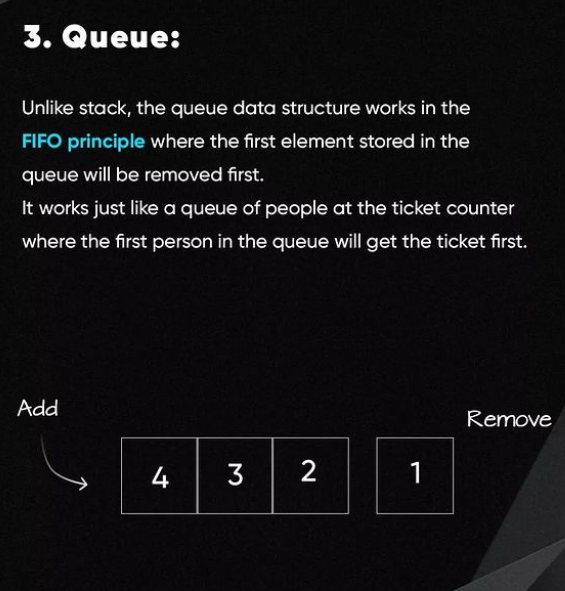
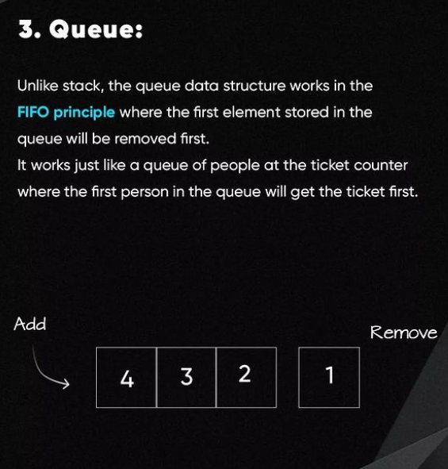

SCRUM - это framework гибкой методологии Agile
Team:
- Product Owner - представитель бизнеса, который хорошо знает его потребности и имеет
представление каким должен быть продукт.
Вместе с ним формируется backlog, который затем разбивается на спринты
- Scrum Master - это посредник между Product Owner и Developers
- Developers
SCRUM / Jira / Slack
типы issues (задач) в Jira:
epic - это у нас квартальная (Q1, Q2...) задача, на
которую планируем story (задачи к выполнению)
story - ?
task - задача не относящаяся к epic'у
bug - задача пофиксить какой то баг
каналы бывают:
- публичные (может вступить любой член команды)
- приватные (можно попасть только по приглашению)
Принято создавать один канал на одну тему для дискуссий
личные сообщения бывают:
- один на один
- групповые
Каналы отличаются от групповых личных сообщений тем, что после создания
группы (личные сообщения) в нее никто не может вступить или выйти из нее.
А в канале это возможно.
Звездочкой можно добавить избранные переписки - в меню появится дополнительный
список Starred.
Из каждого сообщения в группе/канале можно создать отдельный 'thread' - личная
переписка внутри общей, которую видят только 2-е.
Так же в контекстном меню сообщения группы/канала можно выбрать 'pin to
chanel' - прикрепить сообщение к каналу - оно будет видно всем как прикрепленное.
А если нажать звездочку (добавить в избранное), то будет видно только мне в этом
канале как избранное.
@channel notifies all members of a channel
@here notifies only the active members of a channel (with active green status)
development stages
этапы разработки фичи:
- хотелки и требования от заказчика (пользователя) или PM’а без конкретики реализации.
Возможно что то свое предложить или быть готовым отреагировать на ту или иную хотелку
(т.е. предусмотреть все сценарии), задав встречные уточнения
- выбор фреймворков, библиотек, state-менеджера, сборщика...
- системный дизайн (проектирование компонента/фичи/приложения).
High-level design (HLD) включает в себя проектирование всей системы, тогда
как low-level design (LLD) фокусируется на разработке конкретных компонентов
- декомпозиция на составляющие (компоненты) и их взаимодействие
- написание кода
- после тестирования и аппрува PR ветка с фичей деплоится например на тестовую среду
(можно настроить CI/CD файл что бы деплой в то или иное окружении зависел от названия
ветки с фичей)
Системный дизайн (проектирование системы) включает в себя определение элементов
системы и их взаимодействие (архитектура): модулей, компонентов, интерфейсов и потоков данных
пример системного дизайна todoList (псевдокод):
frontend app's arch-re
Структура папок внутри ./src не задает архитектуру frontend приложения, а является лишь ее маленькой частью. Папки могут по разному называться, их может быть разное количество. Архитектура - это в первую очередь взаимодействие модулей (частей системы) друг с другом. На frontend модули - это компоненты (страницы, кнопки...), которые как то внутри себя используют бизнес логику. виды архитектуры, от простой к сложной: - классическая (без архитектуры) - модульная простая - Feature sliced design (модульная сложная) - распределенная: микрофронтэнд + монорепозиторий с микросервисами (микрофронтендами) + модульная
./src - файлы приложения, которые собираются webpack'ом в js-бандл.
* взаимодействие компонентов из ./src и является архитектурой приложения
./public - статические файлы, такие как: index.html, файлы js-библиотек, картинки
и другие asset'ы (активы), которые вы не хотите обрабатывать с помощью webpack
(файлы из ./public копируются и вставляются непосредственно в ./build).
* только файлы из ./public должны напрямую подключаться в ./public/index.html,
а js-бандл подключается автоматически уже при сборке
./build - собраное webpack'ом приложение. JS бандл из различных файлов из ./src
подключается в index.html, копированый из ./public
./dist - дистрибутив, т.е. конечный продукт для распространения.
Обычно это минифицированный build
Примерная структура ./src:
./pages - страницы приложения
./components - свалка компонентов
./api - содержатся запросы на сервер
./helpers (./utils) - переиспользуемые функции
./store - взаимодействие с глобальным хранилищем (redux...)
./hooks - специфика React: кастомные переиспользуемые хуки
./assets - активы: шрифты, иконки, картинки...
Особенности:
- поток данных page-компонентов однонаправленный: т.е. страницы не содержат
внутри себя другие страницы, но содержат компоненты не-страницы (формы, кнопки).
- явного выделения модулей (компонентов) и связи между этими модулями нет
=> возможны кольцевые зависимости. Один компонент может использовать внутри кучу
других и из-за этого могут образовываться неявные связи.
В результате statefull компоненты смешиваются со stateless и если компонентов
много это превращается в хаос с кучей похожих компонентов с небольшими отличаями
=> становится непонятно какой из них использовать + долго искать компоненты, т.к.
они не структурированы.
Эта проблема касается и взаимодействия со store, т.к., например, логика может
быть намешана в разных не совсем связаных reducer'ах => они обрастают лишней
зоной ответственности.
* кольцевые зависимости - это когда модуль A использует (импортирует что то) модуль B,
а модуль B использует модуль A. Это плохо т.к. сборщик не всегда может распутьть этот
клубок и по итогу выдает ошибку.
И что бы это пофиксить, нужно создать модуль C и вынести в него то, что используется
в A и B и таким образом переиспользовать.
Ставим пакеты circular-dependency-plugin + @types/circular-dependency-plugin
и добавляем плагин в webpack (теперь при наличии таких кольцевых зависимостей
при сборке будет ошибка).
Когда использовать:
- команда фронтов меньше 3 человек
- проектная работа (сделал и забыл)
- MVP (прототип), где важна скорость
- простенькие админки / интернет магазины
Примерная структура ./src:
./pages - страницы приложения.
По сути это те же модули, но самого верхнего уровня.
Страница может содержать специфичные запросы, константы,
хелперы, store, как и модули, но все же лучше все это
выносить на уровень модулей.
Главное отличае от модулей в том, что страница должна
оставаться максимально тонкой, т.е. в идеале должна
содержать только какие то модули и компоненты.
./modules - модуль это набор компонентов, объединенных своей зоной
ответственности со своей бизнес-логикой. Кадый модуль решает
свою задачу и связи между модулями явные.
Модуль содержит специфические для своей зоны ответственности
компоненты и прочие вспомогательные файлы (utils, api,
constants), которые используются только внутри этого модуля.
Могут использовать компоненты из слоев ниже.
* Модули не могут использовать внутри себя другие модули.
(infiniteUsersList, ArticleComments, RegistrationForm,
OrderFeedbackForm)
./components - менее самостоятельные чем модули куски кода (например,
карточка товара: может использоваться как на главной странице
магазина, так и в списке рекомендаций), которые могут
использоваться в разных модулях => не обладают явной
бизнес-логикой.
Компоненты если и содержат бизнес-логику, то простую.
Не могут внутри себя содержать модули, но могут содержать
UI-компоненты.
(UserCard, ProductItem, Comment, DocumentsTable)
./UI - UI-компоненты без бизнес логики, т.е. кирпичики из
которых строятся components и modules
(Button, Input, Select, Modal)
 Преимущества:
- изоляция внутренностей модуля за счет public api
- однонаправленный поток данных pages-modules-components-ui
- переиспользуемость
- модули легко удалять из кода, т.к. страницы тонкие
Недостатки:
- что делать, если модуль нужно использовать в другом модуле?
- глобальные (в ./src) хелперы, store... все же могут образовывать неявные связи
между модулями, поэтому не очень подходит для проекта со сложной бизнес-логикой
Преимущества:
- изоляция внутренностей модуля за счет public api
- однонаправленный поток данных pages-modules-components-ui
- переиспользуемость
- модули легко удалять из кода, т.к. страницы тонкие
Недостатки:
- что делать, если модуль нужно использовать в другом модуле?
- глобальные (в ./src) хелперы, store... все же могут образовывать неявные связи
между модулями, поэтому не очень подходит для проекта со сложной бизнес-логикой
Проект на FSD состоит из:
• layers (слоев)
• slices (каждый слой состоит из слайсов - модулей, которые должны
иметь public api (index.ts) для взаимодействия с этими
модулями на слоях выше)
• segments (каждый слайс (модуль) может состоять из таких сегментов):
- ui (компоненты)
- model (бизнес логика: store, actions, slice, thunks...)
- lib (utils, hooks)
- config (конфигурация модуля)
- api (запросы, нужные для модуля: rtk query, ...)
- const (константы для модуля)
- assets (шрифты, иконки...)
- types (ts)
* слои расположены вертикально, т.е. вышележащие слои переиспользуют нижележащие
(модули (slices) на одном слое могут взаимодействовать только с модулями, находящимися
на слоях ниже !!!)
* чем выше слой, тем он менее абстрактый, а более предметный (содержащий бизнес логику)
 Layers:
shared — переиспользуемый код, не имеющий отношения к специфике приложения/бизнеса
(например: UIKit, libs, API)
* в shared слое нет отдельных модулей (slices), здесь сразу лежат сегменты
* в основном рекомендуется располагать api (например инстенс axios c
дефолтными хедерами) и config только в shared слое, что бы модули из
вышележащих слоев могли их использовать
entities (сущности) — бизнес-сущности
(например: User, Product, Order, Comment)
features (фичи) — взаимодействия с пользователем; действия, которые несут бизнес-ценность
для пользователя
(например: AuthByPhone, SendComment, AddToCart, UsersSearch)
widgets — композиционный слой для соединения сущностей и фич в самостоятельные блоки;
это самостоятельный и полноценный блок страницы с конкретными действиями
(например: Sidebar, PostCard, IssuesList, UserProfile)
pages — композиционный слой для сборки полноценных страниц из сущностей, фич и
виджетов
processes (depr) — сложные сценарии, покрывающие несколько страниц
(например: авторизация)
app — корневой компонент, глобальные настройки, декларации с типами ts,
роутер, провайдеры, стили для всего приложения
Layers:
shared — переиспользуемый код, не имеющий отношения к специфике приложения/бизнеса
(например: UIKit, libs, API)
* в shared слое нет отдельных модулей (slices), здесь сразу лежат сегменты
* в основном рекомендуется располагать api (например инстенс axios c
дефолтными хедерами) и config только в shared слое, что бы модули из
вышележащих слоев могли их использовать
entities (сущности) — бизнес-сущности
(например: User, Product, Order, Comment)
features (фичи) — взаимодействия с пользователем; действия, которые несут бизнес-ценность
для пользователя
(например: AuthByPhone, SendComment, AddToCart, UsersSearch)
widgets — композиционный слой для соединения сущностей и фич в самостоятельные блоки;
это самостоятельный и полноценный блок страницы с конкретными действиями
(например: Sidebar, PostCard, IssuesList, UserProfile)
pages — композиционный слой для сборки полноценных страниц из сущностей, фич и
виджетов
processes (depr) — сложные сценарии, покрывающие несколько страниц
(например: авторизация)
app — корневой компонент, глобальные настройки, декларации с типами ts,
роутер, провайдеры, стили для всего приложения

imports
HTML:
<link rel='stylesheet' href='css/index.css'>
<script src='js/main.js'></script>
CSS:
@import 'style/main.css';
@import url('https://webref.ru/style.css');
SCSS:
@import 'media.scss';
@import 'media'; (media.scss / _media.scss или media.css; * нельзя указывать .css)
@import url('https://fonts.googleapis.com/css2?family=Roboto:ital,wght@0,400&display=swap');
JS:
<script type='module'>
import { sayHi } from './say.js'
document.body.innerHTML = sayHi('John')
</script>
Webpack (React) CSS/SCSS:
@import '~normalize.css'; или @import '~normalize.css/normalize.css';
@import '~materialize-css/dist/css/materialize.min.css'; (~ значит из /node_modules)
@import 'fonts.css';
@import '~bootstrap/scss/bootstrap'; (в scss файле .scss можно не писать)
Webpack (React) JS:
import Post from './Post' .js не обязательно
import './styles/styles.css'
import json from './assets/json' .json не обязательно, в React'е
json импортруется уже распаршеный
import webpackLogo from './assets/logo.png' путь к картинке: <img src={webpackLogo}/>
import * as $ from 'jquery' путь к /node_modules не пишется, обычно скрипт
берется из /dist)
import './styles/scss.scss'
import './babel' подключить модуль, но не присваивать его
переменной; подключаемый модуль может ничего
не экспортировать
export { layoutOptions } from './layoutOptions' реэкспорт (= импорт + экспорт);
обычно реэкспортируется несколько файлов (или
все *) в index.js, который лежит в папке с
реэкспортируемыми компонентами; и соответственно
импорт происходит из .../path_to_fold_with_index
без указания пути к index.js
RegExp
шаблоны и флаги символьные классы юникод: флаг 'u' и класс \p{...} якоря: начало строки ^ и конец $ многострочный режим якорей ^ $, флаг 'm' граница \b экранирование, специальные символы наборы [...] и диапазоны [0-9A-F], «исключающие» диапазоны [^…] квантификаторы +, *, ? и {n} жадные и ленивые квантификаторы скобочные группы обратные ссылки в шаблоне: \N и \k<имя> альтернация опережающие (lookahead) и ретроспективные (lookbehind) проверки поиск на заданной позиции, флаг 'y'
Регулярные выражения – мощное средство поиска и замены в строке.
Оно состоит из шаблона и необязательных флагов: g, i, m, u, s, y.
В JS регулярные выражения реализованы отдельным объектом RegExp и
интегрированы в методы строк
Длинный синтаксис (отличается от короткого возможностью подставлять переменные с помощью `${}`):
regexp = new RegExp(pattern, flags)
Короткий синтаксис:
regexp = /шаблон/ без флагов
regexp = /шаблон/gmi с флагами
флаги:
i - поиск не зависит от регистра - нет разницы между A и a
g - поиск ищет все совпадения, без него – только первое
m - многострочный режим
s - включает режим «dotall», при котором точка может соответствовать символу перевода строки \n
u - включает полную поддержку юникода; Флаг разрешает корректную обработку суррогатных пар
y - режим поиска на конкретной позиции в тексте
использование регулярных выражений интегрировано в методы строк: str.match() и str.replace()
let str = 'Любо, братцы, любо!'
let result = str.match(/любо/gi) ['Любо', 'любо']
result.length 2
дополнительная информация:
result.index 0 (позиция совпадения)
result.input Любо, братцы, любо! (исходная строка)
если совпадений нет, то возвращается не пустой массив, а null
let matches = 'JavaScript'.match(/HTML/) null
Метод str.replace(regexp, replacement) заменяет совпадения с regexp в
строке str на replacement (все, если есть флаг g, иначе только первое)
'We will, we will'.replace(/we/i, 'I') I will, we will
'We will, we will'.replace(/we/ig, 'I') I will, I will
В строке замены replacement мы можем использовать специальные
комбинации символов для вставки фрагментов совпадения:
$& - вставляет всё найденное совпадение
"Люблю я HTML тоже".replace(/HTML/, "$& и JavaScript") "Люблю я HTML и JavaScript тоже"
$` - вставляет часть строки до совпадения
"Люблю я HTML тоже".replace(/HTML/, "$` и JavaScript") "Люблю я Люблю я и JavaScript тоже"
$' - вставляет часть строки после совпадения
"Люблю я HTML тоже".replace(/HTML/, "$' и JavaScript") "Люблю я тоже и JavaScript тоже"
$$ - вставляет символ "$"
"Люблю я HTML тоже".replace(/HTML/, "$$ и JavaScript") "Люблю я $ и JavaScript тоже"
Метод regexp.test(str) проверяет, есть ли хоть одно совпадение:
let regexp = /люблю/i
regexp.test('Я ЛюБлЮ JavaScript') true
Символьный класс – это специальное обозначение, которое соответствует любому символу из определённого набора \s - пробел включает в себя символ пробела, табуляции \t, перевода строки (новой строки) \n \S - не пробел \d - цифра \D - не цифра \w - слово буква латинского алфавита или цифра или подчёркивание _ \W - не слово . - любой символ, кроме новой строки, т.е. кроме \n у нас есть номер телефона вида '+7(903)-123-45-6', и нам нужно превратить его в строку только из чисел: 79035419441 let str = '+7(903)-123-45-67' let regexp = /\d/g str.match(regexp) [7,9,0,3,1,2,3,4,5,6,7] str.match(regexp).join('') альтернативный, более короткий путь – найти нецифровые символы \D и удалить их из строки: str.replace(/\D/g, '') Регулярное выражение может содержать как обычные символы, так и символьные классы let str = 'Есть ли стандарт CSS4?' let regexp = /C.S\d/ str.match(regexp) ['CSS4'] Также мы можем использовать несколько символьных классов: 'I love HTML5!'.match(/\s\w\w\w\w\d/) [' HTML5']
Флаг u включает поддержку Юникода в регулярных выражениях.
Конкретно, это означает, что:
- символы из 4 байт воспринимаются как единое целое, а не как два символа по 2 байта
- работает поиск по юникодным свойствам \p{…}
С помощью юникодных свойств мы можем искать слова на нужных языках,
специальные символы (кавычки, обозначения валюты) и т.д.
У символов каретки ^ и доллара $ есть специальные значения в регулярных выражениях. Они называются якоря. Каретка ^ означает совпадение с началом текста, а доллар $ – с концом В конкретно этих случаях мы могли бы использовать и методы строк startsWith/endsWith. Регулярные выражения следует применять, когда нужна проверка сложнее. let str1 = 'Mary had a little lamb' /^Mary/.test(str1) true /lamb$/.test(str1) true Проверка на полное совпадение; Здесь совпадение с \d\d:\d\d ищется не где-то посредине текста, а сразу после начала строки ^, и после него должен быть сразу конец строки $ let goodInput = '12:34' let badInput = '12:345' let regexp = /^\d\d:\d\d$/ regexp.test(goodInput) true regexp.test(badInput) false /^$/ пустая строка
Многострочный режим включается флагом m. Он влияет только на поведение ^ и $.
В многострочном режиме они означают не только начало/конец текста, но и начало/конец
каждой строки в тексте.
let str = `1е место: Винни
2е место: Пятачок
3е место: Слонопотам`
str.match(/^\d/gm) ['1', '2', '3'] без флага m была бы найдена только первая цифра
let str = `Винни: 1
Пятачок: 2
Слонопотам: 3`
str.match(/\d$/gm) ['1', '2', '3'] без флага m была бы найдена только последняя цифра в 1 строке
Граница слова или числа \b – проверка, как ^ и $ 'Hello, Java!'.match(/\bJava\b/) ['Java'] 'Hello, JavaScript!'.match(/\bJava\b/) null null (! не является «символом слова» \w, поэтому после него нет границы слова) 'Hello, Java!'.match(/\bJava!\b/) Мы можем использовать \b не только со словами, но и с числами '1 23 456 78'.match(/\b\d\d\b/g) ['23', '78'] 'Завтрак в 09:00 в комнате 123:456'.match(/\b\d\d:\d\d\b/) ['09:00']
Специальные символы используются для более сложных поисковых конструкций. Вот полный перечень этих символов [ \ ^ $ . | ? * + ( ) Чтобы использовать специальный символ как обычный его нужно экранировать - добавить к нему обратную косую черту: \. 'Глава 5.1'.match(/\d\.\d/) ['5.1'] (совпадение, '\.' - ищет обычную точку 'function g()'.match(/g\(\)/) ['g()'] Если мы ищем обратную косую черту \, это специальный символ как в обычных строках, так и в регулярных выражениях, поэтому мы должны удвоить её '1\\2'.match(/\\/) ['\'] Символ косой черты '/', так называемый «слэш», не является специальным символом, но в JavaScript он используется для открытия и закрытия регулярного выражения: /...шаблон.../, поэтому мы должны экранировать его '/'.match(/\//) ['/'] * При передаче строки в new RegExp нужно удваивать обратную косую черту: \\ для экранирования специальных символов, потому что строковые кавычки «съедят» одну черту
Несколько символов или символьных классов в квадратных скобках […] означают «искать любой символ из заданных». Для примера, [eao] означает любой из 3-х символов: 'a', 'e' или 'o'. Это называется набором. найти [т или х], после которых идёт 'оп' 'Топ хоп'.match(/[тх]оп/gi) ['топ', 'хоп'] 'Вуаля'.match(/В[уа]ля/) null, нет совпадений; ищет 'В', затем [у или а], потом 'ля' Ещё квадратные скобки могут содержать диапазоны символов. К примеру, [a-z] соответствует символу в диапазоне от a до z, или [0-5] – цифра от 0 до 5 ['xAF'] ищется символ, который либо цифра от 0 до 9, либо буква от A до F 'Exception 0xAF'.match(/x[0-9A-F][0-9A-F]/g) ['xAF'] Также мы можем использовать символьные классы внутри […]. \d – то же самое что и [0-9], \w – что и [a-zA-Z0-9_] Например, если мы хотим найти «символ слова» \w или дефис -, то набор будет: [\w-] Помимо обычных диапазонов, есть «исключающие» диапазоны, которые выглядят как [^…]. Они обозначаются символом каретки ^ в начале диапазона и соответствуют любому символу за исключением заданных [^aeyo] любой символ, за исключением 'a', 'e', 'y' или 'o' [^0-9] любой символ, за исключением цифры, то же, что и \D 'alice15@gmail.com'.match(/[^\d\sA-Z]/gi) ['@', '.'] В квадратных скобках большинство специальных символов можно использовать без экранирования !!! разрешены без экранирования все специальные символы, кроме случаев, когда они означают что-то особое в наборах [-().^+] ищет один из символов -().^+ 'Java'.match(/Java[^script]/) null 'JavaScript'.match(/Java[^script]/) ['JavaS'] 'Завтрак в 09:00. Ужин в 21-30'.match( /\d\d[:-]\d\d/g ) ['09:00', '21-30']
Квантификатор указывает количество повторений
Самый простой квантификатор — это число в фигурных скобках: {n}
Он добавляется к символу (или символьному классу, или набору [...]
и т.д.) и указывает, сколько их нам нужно
'Мне 12345 лет'.match(/\d{5}/) ['12345']
Диапазон: {3,5}, от 3 до 5
Для того, чтобы найти числа от 3 до 5 цифр, мы можем указать границы в фигурных скобках: \d{3,5}
'Мне не 12, а 1234 года'.match(/\d{3,5}/) ['1234']
Верхнюю границу можно не указывать. Тогда шаблон \d{3,} найдёт
последовательность чисел длиной 3 и более цифр
'+4(903)-123-45-67'.match(/\d{1,}/g) ['4','903','123','45','67']
Короткие обозначения:
+ - «один или более»; то же самое, что и {1,}
'+4(903)-123-45-67'.match(/\d+/g) // ['4','903','123','45','67']
? - «ноль или один»; то же самое, что и {0,1}; по сути, делает символ необязательным
'Следует писать color или colour?'.match(/colou?r/g) // ['color', 'colour']
* - «ноль или более»; то же самое, что и {0,};
то есть символ может повторяться много раз или вообще отсутствовать
'100 10 1'.match(/\d0*/g) // ['100', '10', '1']
'Привет!... Как дела?.....'.match(/\.{3,}/g) ['...', '.....']
let styles = 'color:#121212; background-color:#AA00ef bad-colors:f#fddee #fd2 #12345678'
styles.match( /#[a-f0-9]{6}\b/gi ) ['#121212', '#AA00ef']
У квантификаторов есть два режима работы: - Жадный (по умолчанию) По умолчанию движок регулярного выражения пытается повторить квантификатор столько раз, сколько это возможно. Из примера ниже: .+ получит все символы. Когда движок дойдёт до конца строки, он продолжит искать совпадение для оставшегося шаблона, т.е. для ". Т.к. строка закончилась, совпадения не будет => он уменьшит количество повторов (осуществит возврат на один символ назад с конца) и попробует снова. Откат будет до символа m, после которого идет " из шаблона. 'a "witch" and her "broom" is one'.match(/".+"/g) ['"witch" and her "broom"'] - Ленивый Включается с помощью знака вопроса ? после квантификатора. То есть будет *? или +? или даже ??. Движок пытается найти совпадение для оставшегося шаблона перед каждым повторением квантификатора 'a "witch" and her "broom" is one'.match(/".+?"/g) ['"witch"', '"broom"'] Альтернативный ленивому вариант поиска "witch", "broom" в жадном режиме: 'a "witch" and her "broom" is one'.match(/"[^"]+"/g) ['"witch"', '"broom"'] Первый, ленивый шаблон, \d+? попытается получить как можно меньше цифр до первого пробела; Второй \d+? возьмёт только одну цифру, потому что этого будет достаточно '123 456'.match(/\d+? \d+?/g) ['123', '4']
Часть шаблона можно заключить в скобки (...). Это называется «скобочная группа».
У такого выделения есть два эффекта:
- Позволяет поместить часть совпадения в отдельный массив
- Если установить квантификатор после скобок, то он будет
применяться ко всему содержимому скобки, а не к одному символу
"my-site.com my.site.com".match( /([\w-]+\.)+\w+/g ) my-site.com, my.site.com
Метод str.match(regexp), если у регулярного выражения regexp
нет флага g, ищет первое совпадение и возвращает его в виде массива:
На позиции 0 будет всё совпадение целиком
На позиции 1 – содержимое первой скобочной группы
На позиции 2 – содержимое второй скобочной группы и так далее…
Например, мы хотим найти HTML теги <.*?> и обработать их.
Было бы удобно иметь содержимое тега (то, что внутри уголков) в отдельной переменной.
let tag = '<h1>Hello, world!</h1>'.match( /<(.*?)>/ )
tag[0] <h1> - полное совпадение
tag[1] h1
Вложенные группы. Скобки могут быть и вложенными
let result = '<span class="my">'.match( /<(([a-z]+)\s*([^>]*))>/ )
result[0] <span class="my"> - полное совпадение
result[1] span class="my" - первая скобка
result[2] span - 1 вложенная скобка
result[3] class="my" - 2 вложенная скобка
Необязательные группы
(...)? - необязательная
let match = 'ac'.match(/a(z)?(c)?/)
match.length 3, длина массива всегда равна 3, т.к. 2 группы
match[0] ac (всё совпадение)
match[1] undefined, потому что для (z)? ничего нет
match[2] c
Поиск всех совпадений с группами: matchAll
при поиске всех совпадений (флаг g) метод match не
возвращает скобочные группы. Например, попробуем найти все теги в строке:
let tags = '<h1> <h2>'.match( /<(.*?)>/g )
alert( tags ) <1>, <h2> - массив совпадений, но без деталей о каждом
чтобы получать скобочные группы для всех совпадений,
мы можем использовать метод str.matchAll(regexp).
Он, как и str.match(regexp), ищет совпадения, но у него есть три отличия:
- Он возвращает не массив, а перебираемый объект.
- При поиске с флагом g, он возвращает каждое совпадение в виде массива со скобочными группами.
- Если совпадений нет, он возвращает не null, а просто пустой перебираемый объект.
let results = '<h1> <h2>'.matchAll(/<(.*?)>/gi)
let [tag1, tag2] = results деструктуризация перебираемого объекта
alert( tag1[0] ) <h1>
alert( tag1[1] ) h1
alert( tag1.index ) 0, дополнительное свойство index (позиция совпадения)
alert( tag1.input ) <h1> <h2>, дополнительное свойство input (исходный текст)
Именованные группы
Гораздо лучше – давать скобкам имена.
Это делается добавлением ?<name> непосредственно после открытия скобки.
группы располагаются в свойстве groups результата match
let dateRegexp = /(?<year>[0-9]{4})-(?<month>[0-9]{2})-(?<day>[0-9]{2})/g
let results = "2019-10-30 2020-01-01".matchAll(dateRegexp)
for(let result of results) { проходимся по итерируемому объекту
let {year, month, day} = result.groups
alert(`${day}.${month}.${year}`) первый вывод: 30.10.2019 второй: 01.01.2020
}
Скобочные группы при замене
str.replace(regexp, replacement) позволяет использовать в строке замены содержимое
скобок. Это делается при помощи обозначений вида $n, где n – номер скобочной группы
'John Bull'.replace(/(\w+) (\w+)/, '$2, $1') Bull, John
Для именованных скобок ссылка будет выглядеть как $<имя>
let regexp = /(?<year>[0-9]{4})-(?<month>[0-9]{2})-(?<day>[0-9]{2})/g
'2019-10-30, 2020-01-01'.replace(regexp, '$<day>.$<month>.$<year>') 30.10.2019, 01.01.2020
Исключение из запоминания скобочных групп через ?:
Бывает так, что скобки нужны, чтобы квантификатор правильно применился, но
мы не хотим, чтобы их содержимое было выделено в результате. Скобочную группу
можно исключить из запоминаемых и нумеруемых, добавив в её начало ?: (?:...)
Обратная ссылка по номеру: \N
К группе можно обратиться в шаблоне, используя \N, где N – это номер группы.
Таким образом мы ссылаемся на содержимое указанной группы.
Пример: необходимо найти строки в кавычках: либо одинарных '...', либо двойных "..."
let str = `He said: "She's the one!".`
str.match( /['"](.*?)['"]/g ) "She' результат - не тот, который хотелось бы
а вот так сработает, \1 означает «найти то же самое, что в первой скобочной группе»
str.match( /(['"])(.*?)\1/g ) "She's the one!"
Обратная ссылка по имени: \k<имя>
Для обращения к именованной группе можно использовать синтаксис \k<имя>
let regexp = /(?<quote>['"])(.*?)\k<quote>/g
`He said: "She's the one!".`.match(regexp) "She's the one!"
Альтернация – термин в регулярных выражениях, которому соответствует слово «ИЛИ». В регулярных выражениях она обозначается символом вертикальной черты | let str = 'Сначала появился язык Java, затем HTML, потом JavaScript' str.match( /html|css|java(script)?/gi ) Java, HTML, JavaScript Квадратные скобки (т.е. наборы) работают только с символами или наборами символов. Альтернация мощнее, она работает с любыми выражениями gr(a|e)y означает точно то же, что и gr[ae]y gra|ey означает gra или ey Люблю HTML|CSS найдёт Люблю HTML или CSS Люблю (HTML|CSS) найдёт Люблю HTML или Люблю CSS let regexp = /([01]\d|2[0-3]):[0-5]\d/g '00:00 10:10 23:59 25:99 1:2'.match(regexp) 00:00, 10:10, 23:59
Иногда нужно найти соответствия шаблону, но только те,
за которыми или перед которыми следует другой шаблон.
X(?=Y) - опережающая проверка
синтаксис опережающей проверки означает: найди X при условии,
что за ним следует Y. Вместо X и Y здесь может быть любой шаблон.
При поиске X(?=Y) движок регулярных выражений, найдя X, проверяет
есть ли после него Y. Если это не так, то игнорирует совпадение и
продолжает поиск дальше.
30 число 1 проигнорировано, так как за ним НЕ следует €
'1 индейка стоит 30€'.match(/\d+(?=€)/)
X(?=Y)(?=Z) этот шаблон означает, что мы ищем X при условии, что за ним идёт и Y и Z
ищет \d+ при условии, что за ним идёт пробел, и где-то впереди есть 30
'1 индейка стоит 30€'.match(/\d+(?=\s)(?=.*30)/) 1
X(?!Y) - негативная опережающая проверка
Допустим, нам нужно узнать из этой же строки количество индеек,
то есть число \d+, за которым НЕ следует знак €
'2 индейки стоят 60€'.match(/\d+(?!€)/) 2
(?<=Y)X - ретроспективная проверка
ищет совпадение с X при условии, что перед ним ЕСТЬ Y
'1 индейка стоит $30'.str.match(/(?<=\$)\d+/) 30
(?<!Y)X - негативная ретроспективная проверка
ищет совпадение с X при условии, что перед ним НЕТ Y
'2 индейки стоят $60'.match(/(?<![\$\d])\d+/) 2
Скобочные группы внутри опережающей и ретроспективной проверки.
В некоторых ситуациях нам может быть интересно захватить и то,
что в проверке. Для этого нужно обернуть это в дополнительные скобки.
'1 индейка стоит 30€'.match(/\d+(?=(€|kr))/) 30 (match 1), € (group 1)
Если у регулярного выражения в методе regexp.exec(str) есть флаг g (глобальный поиск), то поиск осуществляется в строке str, начиная с позиции, заданной свойством regexp.lastIndex. И, когда находит, обновляет regexp.lastIndex на позицию после совпадения. При создании регулярного выражения его свойство lastIndex равно 0. Так что повторные вызовы regexp.exec возвращают совпадения по очереди, одно за другим. let str = 'let varName' let regexp = /\w+/g alert(regexp.lastIndex) 0 (при создании lastIndex === 0) let word1 = regexp.exec(str) alert(word1[0]) let (первое слово) alert(regexp.lastIndex) 3 (позиция за первым совпадением) let word2 = regexp.exec(str) alert(word2[0]) varName (второе слово) alert(regexp.lastIndex) (позиция за вторым совпадением) let word3 = regexp.exec(str) alert(word3) null (больше совпадений нет) alert(regexp.lastIndex) 0 (сбрасывается по окончании поиска) То есть, при флаге g свойство lastIndex задаёт начальную позицию поиска Флаг y заставляет regexp.exec искать ровно на позиции lastIndex, ни до и ни после ! И если не находит на заданной позиции, то возвращает null и прекращает поиск let str = 'let varName = "value"' let regexp = /\w+/y regexp.lastIndex = 3 alert( regexp.exec(str) ) null (на позиции 3 пробел, а не слово) regexp.lastIndex = 4 alert( regexp.exec(str) ) varName (слово на позиции 4) alert( regexp.lastIndex ) 11 alert( regexp.exec(str) ) null, на позиции 11 нет совпадения (на позиции 11 пробел, а не слово)
local servers
локальные серверы:
простые (ограничен функционал):
http-server (npm i -g http-server, запускаем в папке с проектом http-server -c-1 ./)
browsersync (browser-sync start --server --files 'index.html' 'style.css' 'index.js')
liveServer (npm i -g live-server [or npx...], live-server . --port=3002 (. - текущая папка))
для запуска серверной части, что бы файл с БД (db.json) отдавал данные
json-server (json-server db.json -p 4000)
полноценные (поддерживающие все запросы, не только GET):
OpenServer
MAMP
сервис для тестирования запросов всех видов: https://jsonplaceholder.typicode.com
Prettier / ESlint
Prettier - форматер кода в соответствии с набором правил установка prettier: npm install -g prettier npm install -D --save-exact prettier --save-exact значит точная версия без диапазона config example .prettierrc.json: { на сайте есть playground для конфигурации "tabWidth": 2, "semi": true, ; "arrowParens": "always", включите круглые скобки вокруг единственного параметра стрелочной ф-ии "trailingComma": "none", , в конце последнего поля "singleQuote": true '' вместо "" } npx позволяет запускать локально установленные инструменты Примечание: если вы забудете сначала установить Prettier, npx временно загрузит последнюю версию. Это не очень хорошая идея при использовании Prettier, потому что Prettier меняет форматирование кода в каждом выпуске! Важно иметь заблокированную версию Prettier (--save-exact) в package.json запуск prettier (можно и в скрипте в package.json): format all files with prettier: "npx prettier --write ." format a certain directory: "npx prettier --write server/" format a certain file: "npx prettier --write server/components/Button.js" format all tests in a directory: "npx prettier --write \"server/**/*.js\" && npx prettier --write \"configurator/**/*.js\"" * в webStorm встроена поддержка Prettier; в поле Prettier package нужно выбрать пакет prettier из node_modules проекта; можно настроить что бы форматировать файлы при сохранении или при нажатии ctrl + alt + l
ESLint - инструмент, который анализирует код на наличие ошибок, которые могут включать
стилистические ошибки, а также ошибки кода, которые приводят к ошибкам и оповещает о них.
Например, ESLint предупредит, если разработчик использует переменную, не объявив ее
предварительно. Или если разработчик использует bind, когда в этом нет необходимости.
ESLint сообщит, что он считает неправильным, и с опцией –fix как то это поправит.
Prettier и ESLint дополняют друг друга, но они также могут конфликтовать, когда
возникает ошибка в стиле кода, т.к. у линтеров обычно также есть стилизация.
В ESLint можно выключить правила которые конфликтуют или необязательны с Prettier
с помощью этой готовой конфигурации: eslint-config-prettier
Чтобы была подсветка в редакторе, нужно поставить ESLint плагин или, в случае
с WebStorm, просто в настройках активировать ESLint (Automatic ESLint configuration).
* В WebStorm 2020.1 чтобы работала подсветка, нужно поставить глобальную версию
eslint < 8.0.0 (npm i -g eslint@7.32.0) + выбрать в настройках WebStorm (manual
eslint configuration и выбрать ESLint package ~/AppData... (7.32.0))
Так же лучше установить глобально пакет eslint что бы выполнять авто fix отдельных
файлов или папок в случае ошибок, например из папки проета:
eslint --fix webpack.config.js src (пофиксить webpack.config.js и /src)
или
npx eslint --fix "**/*.{ts,tsx}"
установка ESLint:
npm install -D eslint
config example .eslintrc.json:
{
"extends": [
"react-server",
"prettier/@typescript-eslint",
"plugin:prettier/recommended"
],
"settings": {
"react": {
"versions": "detect"
}
}
}
.eslintignore example:
build
запуск линтинга файла/папки (удобней выносить в команды в скриптах):
npx eslint yourfile.js / npx eslint ./src / npx eslint "**/*.{ts,tsx}"
eslint-config-prettier - отключает все правила, которые не нужны или могут
противоречить Prettier
eslint-plugin-prettier - запускает Prettier как правило ESLint. Этот плагин работает
лучше всего, если вы отключите все другие правила ESLint,
связанные с форматированием кода, и включите только правила,
которые обнаруживают потенциальные ошибки.
Можете использовать eslint-config-prettier, чтобы отключить
все правила ESLint, связанные с форматированием.
Плагин поставляется с конфигурацией plugin:prettier/Recommended,
которая настраивает и плагин, и eslint-config-prettier.
Нужно добавить plugin:prettier/recommended в качестве
последнего расширения в .eslintrc.json:
{
"extends": ["plugin:prettier/recommended"]
}
Затем вы можете установить собственные параметры Prettier
в .prettierrc.json
babel-eslint - позволяет линтить Babel код (экспериментальные функции, которые
пока не поддерживаются в самом ESLint)
eslint-plugin-import - для поддержки синтаксиса импорта/экспорта ES6+ и предотвращения
проблем с неправильным написанием путей к файлам и имен импорта
eslint-plugin-react - особые React'ие правила линтинга. Также заставит вас приписывать
ко всем своим компонентам описания принимаемых ими типов данных
eslint-plugin-react-hooks - обеспечивает соблюдение правил хуков
eslint-config-react-app - включает общую конфигурацию ESLint, используемую Create React App
в .eslintrc.json:
{
"extends": "react-app"
}
можно переопределить настройки eslint-config-react-app,
отредактировав .eslintrc.json
* если нужно проигнорировать ругание линтера, можно над строкой с ошибкой поставить:
// eslint-disable-next-line или например // eslint-disable-next-line no-undef
Лучше запускать eslint / prettier команды при git commit + только для
проиндексированых в гите (staged) файлов (т.е. для новых или измененных),
т.к. линтить весь проект долго и не зачем. Для этого:
npm i lint-staged -D - для выполнения eslint / prettier команд не для всех
указаных файлов, а только для проиндексированых (staged)
* для запуска lint-staged команд перед комитом нужен husky
npm i husky -D - для настройки git хука pre-commit, чтобы запускать
любые команды перед коммитом.
git хуки - это нативная фича у git
* husky может быть и без lint-staged: ему все равно
запустить lint-staged или команду из скриптов в
package.json, которая, например запустит prettier
// husky
{
...
"scripts": {
"format": "npx prettier --write \"app/**/*.js\" && npx prettier --write \"show/*.js\""
},
"husky": {
"hooks": {
"pre-commit": "npm run format"
}
}
}
// husky + lint-staged
{
...
"husky": {
"hooks": {
"pre-commit": "lint-staged"
}
},
"lint-staged": {
"*.js": "eslint",
"src/**/*.{js,jsx,ts,tsx,json,css,scss,md}": "prettier --write"
}
}
Babel
Babel - транспилирует ES6+ в обратно-совместимую версию JavaScript (ES5-), которую
могут запускать старые движки JS. Нестандартный синтаксис JavaScript, такой как JSX, также
можно преобразовать c помощью Babel.
Т.е. Babel переписывает код, преобразовывая новые синтаксические конструкции (не путать
со встроенными фичами) в старые с помощью babel-плагинов или пресетов (наборов плагинов)
пример плагинов:
@babel/preset-react - для траспилции JSX
@babel/plugin-proposal-class-properties - для транспиляции статических свойств/методов класса
Так же Babel предоставляет polyfill'ы для поддержки фич, которые полностью отсутствуют
в средах JavaScript. Например, статические методы, такие как Array.from, и встроенные, такие
как Promise, доступны только в ES6+, но их можно использовать в более старых версиях, если
используется polyfill Babel.
Т.е. polyfill - код, написанный в старом стандарте для замещения встроенных функций, которых
не существует в старых браузерах
хранилища полифилов, помимо @babel/polyfill:
core-js (www.npmjs.com/package/core-js) - поддерживает много функций, можно подключать
только нужные
polyfill.io - сервис, который автоматически создаёт скрипт с полифилом в зависимости от
необходимых функций и браузера пользователя
установка базовых пакетов:
npm i -D @babel-cli @babel-core @babel/preset-env
скрипт в package.json:
файлы из server/js транспилируем и помещаем в server/dist, используя --preset-env
"watch": "babel server/js -d server/dist --preset-env -w"
Чтобы включить только полифилы и преобразования кода, необходимые пользователям, чьи
браузеры занимают >0,25% рынка (игнорируя браузеры без обновлений безопасности, такие
как IE 10) можно в package.json указать поле "browserslist": "> 0.25%, not dead"
можно так же создать конфиг babel.config.json:
{
"presets": ["@babel/preset-env"]
}
webpack
Сборка (бандлинг) — это процесс выявления импортированных файлов и объединения
их в один «собранный» файл (бандл). Этот бандл после подключения на веб-страницу
загружает всё приложение за один раз
При обычном подключении скриптов в html нужно учитывать правильность путей и
последовательность подключения. webpack решает эти задачи, являясь сборщиком.
Так же он обрабатыват всю графику, стили, шрифты и другие файлы
В webpack js файлы автоматически становятся модулями (как скрипт с type='module')
С webpack можно взаимодействовать через консоль, но удобней через конфигурационный
файл: для этого в корне нужно создать файл webpack.config.js.
webpack работает на платформе nodeJS => в webpack.config.js можно использовать
последний синтаксис JS т.к. nodeJS его понимает
В новой версии Node.js локальные npm пакеты нужно запускать с помощью утилиты npx.
Например: npx webpack вместо webpack.
В поле scripts в package.json можно не писать npx
В webpack можно импортировать все виды файлов прямо в js-файл - достаточно загрузить
определенный лоадер. webpack сам по себе может работать только с js-файлами, он не
понимает ни css, ни картинки, ни шрифты... Чтобы webpack мог работать с другими типами
данных ему нужны лоадеры.
Для json-файлов лоадеры не нужны, их можно просто импортировать в js-файлы
В webpack есть 2 режима компиляции, которые отличаются скоростью работы и уровнем
оптимизации кода:
--mode=development
--mode=production (default)
По дефолту webpack работает в режиме production, если не указывать режим явно с
помощью ключа в скриптах в package.json.
В webpack.config.js указываем mode: 'development' (можно не указывать), что бы,
если не указан ключ в package.json, webpack запускался в режиме разработки
флаг --watch в скрипте в package.json позволяет следить за изменением файлов
webpack-dev-server складывает все бандлы и файлы в оперативную память,
поэтому, пока мы из него не вышли ^C, мы не увидем изменений в /dist
webpack-dev-server запускается командой serve и можно без слова run: npm start
HMR — (Hot Module Replacement) заменяет, добавляет или удаляет модули во
время работы приложения (например при добавлении файла с новым hash'ом в
названии его нужно подключить вместо старого) без полной перезагрузки.
Так же HMR позволяет сохранять состояние приложения, которое теряется во
время полной перезагрузки
Команда stats в package.json создает в корне stats.json со статистикой
webpack-bundle-analyzer и открывает инфографику, как и после команды build (в
--mode production)
Команды:
npx webpack запускает приложение (создает bundle.js)
cross-env NODE_ENV='<mode>' устанавливает системному свойству NODE_ENV
режим development или production
Пакеты:
webpack корневой функционал webpack
webpack-cli отвечает за команды webpack, которые доступны в консоле
html-webpack-plugin меняет подключаемые пути и имена файлов и отправляет
html в output каталог + подключает js-бандл в html;
так же минифицирует html
css-loader позволяет понимать импорты css файлов в js и отправляет
файл в output каталог
style-loader вставляет inline стили в html тег <head>; поэтому
мы его не используем, а исползуем mini-css-extract-plugin,
который ищет импорты стилей и превращает их в отдельный
файл + автоматом подключает его в html
file-loader преобразует import/require для файла (картинки, шрифты) в
URL и отправляет файл в output каталог
webpack-dev-server разворачивает локальный сервер с вотчингом файлов и
автоперезагрузкой
copy-webpack-plugin копирует файл или папку в нужное место без обработки
cross-env определяет в какой ОС мы находимся для правильной установки
системной переменной NODE_ENV, указывающей режим разработки
development или production; для этого в package.json при
запуске скрипта указываем значение NODE_ENV. Например,
cross-env NODE_ENV=development и в конфиге webpack юзаем ее
mini-css-extract-plugin как плагин: ищет импорты стилей и превращает их в отдельный
файл;
как лоадер (MiniCssExtractPlugin.loader): позволяет не
перезагружать страницу при изменениях и добавляет стили в
секцию <head> в html
optimize-css-assets-webpack-plugin минифицирует css
terser-webpack-plugin минифицирует js
node-sass корневой функционал sass и scss
sass-loader для взаимодействия webpack и sass
@babel/core корневой функционал babel
babel-loader для взаимодействия webpack и babel
@babel/preset-env preset-env включает все плагины
для преобразования ES6+ в ES5
@babel/polyfill для использования async/await
(полифилы устанавливаются в dependencies)
(deprecated! вместо него теперь следует
ставить npm i regenerator-runtime core-js@3.9.0)
@babel/plugin-proposal-class-properties плагин для транспиляции статических
свойств/методов класса
webpack-bundle-analyzer анализирует размер файлов и библиотек в
приложении и воводит инфографику
package.json
"scripts": {
"dev": "cross-env NODE_ENV=development webpack --mode=development",
"build": "cross-env NODE_ENV=production webpack --mode=production",
"watch": "cross-env NODE_ENV=development webpack --mode=development --watch",
"start": "cross-env NODE_ENV=development serve --mode=development --open",
"stats": "webpack --json > stats.json && webpack-bundle-analyzer stats.json"
},
"browserslist": "> 0.25%, not dead" // для @babel/preset-env
webpack.config.js
// require('plugin-name') подключает встроенные модули или модули из node_modules
const path = require('path')
const HtmlWebpackPlugin = require('html-webpack-plugin')
const CopyPlugin = require('copy-webpack-plugin')
const MiniCssExtractPlugin = require('mini-css-extract-plugin')
const optimizeCssAssetsWebpackPlugin = require('optimize-css-assets-webpack-plugin')
const terserWebpackPlugin = require('terser-webpack-plugin')
const { BundleAnalyzerPlugin } = require('webpack-bundle-analyzer')
// значение системной переменной NODE_ENV задается в поле package.js
// при вызове скриптов (нужен пакет 'cross-env' в devDependencies)
const isDev = process.env.NODE_ENV === 'development',
isProd = !isDev
const plugins = () => { // возвращает массив плагинов
const base = [ // все плагины добавляются в массив плагинов как инстенсы
// подключает js-бандл(ы) в html-файл и меняет его(их) подключаемое имя
// при зменении в js-бандле + отправляет html в output каталог (/dist)
new HtmlWebpackPlugin({
// чтобы title и весь контент брался из исходного html указывается template
template: './index.html',
minify: { collapseWhitespace: isProd } // для минификации в режиме production
}),
// копируем файл/папку в нужное место без обработки
new CopyPlugin({
patterns: [
{
from: path.resolve(__dirname, 'src/favicon.ico'),
to: path.resolve(__dirname, 'dist')
}
],
}),
new MiniCssExtractPlugin({
filename: filename('css')
})
]
if (isProd) { // используем analyzer в режиме production (когда все оптимизировано)
base.push(new BundleAnalyzerPlugin())
}
return base
}
const optimization = () => { // возвращает настройку оптимизации (chunks, миниф-е css и js)
const config = {
// чтобы в бандлах (если их несколько) не дублировались одни и те же библиотеки и
// др. файлы, подключаемые в разных точках входа; webpack будет выносить общий для
// бандлов код (библиотеку) в отдельный файл с префиксом vendors
splitChunks: {
chunks: 'all'
}
}
if (isProd) {
config.minimizer = [ // минифицирование css и js
new optimizeCssAssetsWebpackPlugin(),
new terserWebpackPlugin()
]
}
return config
}
// в режиме development нет смысла в длинных названиях
const filename = ext => isDev ? `[name].${ext}` : `[name].[hash].${ext}`
module.exports = { // нужно экспортировать объект-конфигурации webpack
context: path.resolve(__dirname, 'src'), // для упрощения конфига говорим где исходники
// не обязательное (если не указан ключ в package.json, webpack запустится в development)
mode: 'development',
entry: { // точка(и) входа; если несколько точек входа (чанков), то значение объект
// кастомное название точки входа, например main;
// для одной точки входа можно: entry: './index.js'
main: ['@babel/polyfill', './index.js'], // сюда подключается polyfill для babel
analytics: './analytics.js'
},
output: { // указываем куда все складывать - точку(и) выхода
// можно добавить паттерн имени [name] (вместо паттерна станет имя файла) чтобы
// для каждой точки входа, если их несколько, генерировалась своя точка выхода;
// если этого не сделать, то в одной точке выхода смешаются независимые файлы из входа;
// чтобы не возникало проблем с кэшированием (после изменений в проекте бандл
// пересобирается, а имя файла не меняется, и оно кэшируется браузером) можно
// динамически менять имя шаблоном контента [hash]; он генерируется по содержимому
// файла; т.е. при изменении приложения и залитии на прод юзер сразу увидит обновления
filename: filename('js'),
path: path.resolve(__dirname, 'dist'), // складываем в папку dist бандл(ы)
clean: true // чтобы папка /dist очищалась от старых ненужных файлов (со старым [hash])
},
// с такой ↑ минимальной конфигурацией (entry, output) нам доступны import, export,
// require, module.exports в скриптах; и теперь не нужно думать в каком порядке
// выстраивать различные скрипты и мы можем удобно декомпозировать всё приложение
plugins: plugins(),
module: { // loaders для загрузки в js-файлы разных рес-в: картинок, стилей, шрифтов...
rules: [
{
// если webpack встречает импорты в js-файле с расширением .css,
// то нужно использовать: css-loader -> style-loader;
test: /\.css$/,
// use: ['style-loader', 'css-loader'] // порядок важен, справа-налево!
// вместо style-loader лучше использовать MiniCssExtractPlugin.loader
// (так же подключаем как плагин MiniCssExtractPlugin)
use: [
{
loader: MiniCssExtractPlugin.loader, // добавляет стили в <head> в html
options: {
hmr: isDev, // Hot Module Reloading
reloadAll: true
}
},
'css-loader'
]
},
{
test: /\.s[ac]ss$/,
use: [
{
loader: MiniCssExtractPlugin.loader,
options: {
hmr: isDev,
reloadAll: true
}
},
'css-loader',
'sass-loader'
]
},
{
test: /\.(png|jpg|svg|gif)$/,
use: ['file-loader']
},
{
test: /\.(ttf|eot|woff|woff2)$/,
use: ['file-loader']
},
{
test: /\.js$/,
exclude: /node_modules/,
loader: {
loader: 'babel-loader',
options: {
presets: ['@babel/preset-env'],
plugins: ['@babel/plugin-proposal-class-properties']
}
}
}
]
},
// добавлять исходные карты для стилей и скриптов если в режиме development
devtool: isDev ? 'source-map' : '',
devServer: { // настройка webpack-dev-server
port: 4200,
open: true,
hot: isDev, // HMR
watchFiles: './src'
},
resolve: { // дополнительные встроенные возможности webpack
// набор разрешений, которые можно не указывать при импорте (по дефолту только .js)
// extensions: ['.js', '.png'],
alias: { // регистрируем псевдонимы для удобного указания путей
'@': path.resolve(__dirname, 'src')
}
},
optimization: optimization()
}
OOP
Изначально код писался в функциональном (процедурном) стиле.
Т.е. программа писалась только функциями. Минусы функционального подхода:
много кода, трудности в чтении, организации логики, сложность в организации
отдельных модулей
В результате появилось ООП. Его основная идея - любую структуру в приложении
можно представить в виде объекта или класса
Концепция ООП состоит из 4 китов:
1. Абстракция
Выразить в абстракцию - выделить какую то сущность, которая объединяет общую логику (как
можно больше высокоуровневых свойств, методов).
Например, на сайте есть кнопка входа и кнопка поделиться. Можно дать кнопкам одинаковый
класс. Этому классу можно задать общие св-ва и методы, присущие всем кнопкам. А уже на более
низком уровне, в рамках класса конкретной кнопки, реализовывать присущий конкретной кнопке
функционал
2. Наследование
Создаем класс кнопки входа, унаследованный от общего для всех кнопок класса. Затем
добавляем этой кнопке уникальные свойства и методы, отвечающие за вход в личный кабинет
3. Инкапсуляция
Для скрытия внутреннего интерфейса мы используем защищённые или приватные свойства и методы.
То есть прячем (_ или #) внутри класса все методы и свойства, которые нужны для внутреннего
пользования и даем наружу только те, о которых должен знать пользователь
4. Полиморфизм
Буквально переводится - множество форм, многообразие;
Полиморфизм - изменение поведения одноименного метода в рамках разных классов, например,
наследующих друг от друга; Или когда экземпляр класса переопределяет метод из прототипа.
То есть название метода одинаковое, но сам метод меняет свои действия. Например, кнопка
входа расширяет унаследованный метод deleteBtn, выводя так же в консоль - кнопка входа
удалена.
Так же это возможность переменной принимать разные типы данных. Или для функции это
возможность возвращать разные значения в зависимости от типа передаваемых аргументов.
Разная реализация метода toString у встроенных классов это так же пример полиморфизма
Так же к ООП относится композиция и агрегация - вариант межклассового взаимодействия,
в добавок к наследованию, при котором одни классы или объекты содержат в себе другие.
Пример композиции - в конструкторе класса свойству присваивается значение в виде
экземпляра какого то класса.
Пример агрегации - класс, который используется внутри другого класса, передается
в качестве аргумента конструктору
js patterns
Шаблон проектирования — повторяемая архитектурная конструкция, представляющая собой решение
проблемы проектирования в рамках некоторого часто возникающего контекста
шаблоны проектирования можно поделить на 3 группы:
creational (пораждающие) - позволяют создавать какие то объекты и классы
structural (структурные) - для правильного добавления нового функционала в имеющуюся систему
behavioral (поведенческие) - позволяет выстроить лучшую коммуникацию между объектами, классами...
* не нужно подстраивать свой код под какой то паттерн!
creational patterns: structural patterns: behavioral patterns:
singleton decorator mediator
factory-method facade iterator
abstract-factory proxy chain-of-responsibility
prototype adapter strategy
builder composite memento
bridge template-method
flyweight visitor
command
observer
state
CREATIONAL PATTERNS:
singleton (одиночка) - используется для того, чтобы ограничиться одним экземпляром класса,
т.е. при каждом вызове будет создаваться новая ссылка на один и тот
же ранее созданный экземпляр, а не создавать новый.
Пример использования: корзина или карта клиента в интернет магазине
class Counter {
constructor() {
if (typeof Counter.instance === 'object') {
return Counter.instance // если уже был создан объект - возвращаем на него ссылку
}
this.count = 0
Counter.instance = this // записываем в свойство ссылку на 1й создаваемый объект
return this
}
getCount() {
return this.count
}
increaseCount() {
return this.count++
}
}
factory method (фабричный метод) - создание класса для создания множества однотипных
объектов на основании входных данных.
Простая фабрика может состоять из 2 классов:
• конструктор - генерирует новый объект
• фабрика - вызывает создание объекта
с определенными параметрами
Классов-конструкторов может быть несколько
class Bmw { // конструктор
constructor(model, price, maxSpeed) {
this.model = model
this.price = price
this.maxSpeed = maxSpeed
}
}
class BmwFactory { // фабрика
create(type) {
if (type === 'X5')
return new Bmw(type, 108000, 300)
if (type === 'X6')
return new Bmw(type, 111000, 320)
}
}
const factory = new BmwFactory()
const x5 = factory.create('X5')
abstract factory (абстрактная фабрика) - класс-фабрика, групирующая другие фабрики
(подфабрики), которые связаны друг с другом.
По сути абстрактная фабрика - надстройка над
другими фабриками.
// абстрактная фабрика
function bmwProducer(kind) { // производит спорткары или семейные авто
return kind === 'sport' ? sportCarFactory : familyCarFactory
}
// подфабрики
function sportCarFactory() {
return new Z4()
}
function familyCarFactory() {
return new I3()
}
// непосредственное производство авто
class Z4 {
info() {
return 'Z4 is a Sport car!'
}
}
class I3 {
info() {
return 'i3 is a Family car!'
}
}
const produce = bmwProducer('sport')
const myCar = new produce()
console.log(myCar.info()) // Z4 is a Sport car!
prototype - создание копий объектов, которые могут понадобиться чтобы в случае
необходимости изменить их структуру. Копирование удобней
class TeslaCar {
constructor(model, price, interior, autopilot) {
this.model = model
this.price = price
this.interior = interior
this.autopilot = autopilot
}
produce() { // клонирует созданный экземпляр
return new TeslaCar(this.model, this.price, this.interior, this.autopilot)
}
}
const prototypeCar = new TeslaCar('S', 80000, 'black', false)
// produce удобней, чем передавать одинаковые аргументы каждый раз для создания авто
const car1 = prototypeCar.produce()
const car2 = prototypeCar.produce()
// changes for particular auto
car1.interior = 'white'
car1.autopilot = true
builder - что бы конструктор класса сильно не разросся используется паттерн builder,
который позволяет создавать сложные объекты, инициализацию которых проблематично
уместить в конструкторе.
Может иметь дополнительный слой абстракции Director, который управляет
несколькими builder'ми
class Car {
constructor() {
this.autoPilot = false
this.parktronic = false
this.signaling = false
}
}
class CarBuilder { // билдер для удобного создания объектов
constructor() {
this.car = new Car() // создаем авто базовой комплектации
}
addAutoPilot(autoPilot) {
this.car.autoPilot = autoPilot
return this
}
addParktronic(parktronic) {
this.car.parktronic = parktronic
return this
}
addSignaling(signaling) {
this.car.signaling = signaling
return this
}
updateEngine(engine) {
this.car.engine = engine
return this
}
build() {
return this.car
}
}
const myCar = new CarBuilder()
.addAutoPilot(true)
.addParktronic(true)
.addSignaling('V8')
.build()
STRUCTURAL PATTERNS:
decorator - позволяет добавлять объектам новые свойства и методы,
т.е. оборачивать объект в класс декоратора
class Car {
constructor() {
this.price = 10000
this.model = 'Car'
}
getPrice() {
return this.price
}
getDescription() {
return this.model
}
}
class Tesla extends Car {
constructor() {
super();
this.price = 25000
this.model = 'Tesla'
}
}
class Autopilot { // декоратор, добавляет автопилот
constructor(car) {
this.car = car
}
getPrice() {
return this.car.getPrice() + 5000
}
getDescription() {
return `${this.car.getDescription()} with autopilot`
}
}
let tesla = new Tesla()
tesla = new Autopilot(tesla)
console.log( tesla.getPrice() ) // 30000
facade (фасад) - скрывает объемную/сложную логику за простым фасадом.
Собирает различные сложные структуры, объединяет их
и выдает простой способ взаимодействия
class Сonveyor {
setBody() {
console.log('Body set!')
}
getEngine() {
console.log('Dismantle Engine!')
}
setEngine() {
console.log('Engine set!')
}
setWheels() {
console.log('Wheels!')
}
addElectronics() {
console.log('Added electronics!')
}
paint() {
console.log('Car painted!')
}
}
class СonveyorFacade {
constructor(car) {
this.car = car
}
assembleCar() { // фасад, для сборки
this.car.setBody()
this.car.setEngine()
this.car.setWheels()
this.car.addElectronics()
this.car.paint()
}
changeEngine() { // фасад, для замены
this.car.getEngine()
this.car.setEngine()
}
}
proxy (заместитель) - вместо реальных объектов предоставляет объекты-заменители.
Эти объекты перехватывают вызовы к оригиналам и позволяют
что то сделать до или после обращения к оригинальному объету.
Объект-заменитель (заместитель) должен реализовывать такой же
интерфейс (такие же названия методов), как и оригинальный объект.
Т.е. это прослойка, которая позволяет произвести дополнительные
манипуляций до того, как отдать дальнейший контроль.
Пример: - авторизация на сайте, и в зависимости от статуса появляется
или полный доступ или частичный, или полностью закрыт
- логирующий proxy - хранение истории обращения
- кэширующий proxy - частичное кеширование результатов
запросов клиента и управление ними
- защищающий proxy (пример ниже)
class CarAccess {
open() {
console.log('Opening car door')
}
close() {
console.log('Closing the car door')
}
}
// proxy-класс - охранная система (голосовой валидатор) для безопасного открытия дверей
class SecuritySystem { // заместитель с тем же интерфейсом (open и close) что и оригинал
constructor(door) {
this.door = door
}
open(password) {
if (this.authenticate(password)) {
this.door.open()
} else {
console.log('Access denied!')
}
}
authenticate(password) {
return password === 'Ilon'
}
close() {
this.door.close()
}
}
const door = new SecuritySystem(new CarAccess())
door.open('Jack') // Access denied!
door.open('Ilon') // Opening car door
door.close() // Closing the car door
adapter - оборачивает несовместимый с чем то объект и делает его совместимым,
не изменяя исходный код объекта
class Engine2 {
simpleInterface() { console.log('Engine 2.0 - tr-tr-tr') }
}
class EngineV8 {
complecatedInterface() { console.log('Engine V8! - wroom wroom!') }
}
class EngineV8Adapter {
constructor(engine) {
this.engine = engine
}
simpleInterface() { // адаптируем - делаем совместимый метод из несовместимого
this.engine.complecatedInterface()
}
}
class Auto {
startEngine(engine) { // знает только simpleInterface метод двигателя
engine.simpleInterface()
}
}
composite (компановщик) - позволяет сгруппировать множество объектов в древовидную
структуру и работать с этой структурой так, как будто это
один единственный объект
class Equipment {
getPrice() {
return this.price || 0
}
getName() {
return this.name
}
setName(name) {
this.name = name
}
setPrice(price) {
this.price = price
}
}
class Engine extends Equipment {
constructor() {
super()
this.setName('Engine')
this.setPrice(800)
}
}
class Body extends Equipment {
constructor() {
super()
this.setName('Body')
this.setPrice(3000)
}
}
class Composite extends Equipment {
constructor() {
super()
this.equipments = []
}
add(equipment) { // добавляет детали авто
this.equipments.push(equipment)
}
getPrice() { // суммирует цены всех деталей
return this.equipments
.map(equipment => equipment.getPrice())
.reduce((a, b) => a + b)
}
}
class Car extends Composite {
constructor() {
super()
this.setName('Audi')
}
}
const myCar = new Car()
myCar.add(new Engine())
myCar.add(new Body())
console.log(`${myCar.getName()} price is ${myCar.getPrice()}`) // Audi price is 3800
bridge (мост) - разделяет один или несколько классов на две отдельные
иерархии — абстракцию (обертка, которая сама не выполняет работу, а
делигирует ее объекту реализации) и реализацию, позволяя изменять их
независимо друг от друга
class Model {
constructor(color) {
this.color = color
}
}
// Color - мост, дергающий классы цветов
class Color { // принимает тип цвета
constructor(type) {
this.type = type
}
get() {
return this.type
}
}
class BlackColor extends Color {
constructor() {
super('dark-black')
}
}
class SilbrigColor extends Color {
constructor() {
super('Silbermetallic')
}
}
// сами модели с цветами не работают, работа делегируется классу Color (метод get)
class Audi extends Model {
constructor(color) {
super(color)
}
paint() { // связь (мост) между независимыми классами
return `Auto: Audi, Color: ${this.color.get()}`
}
}
class Bmw extends Model {
constructor(color) {
super(color)
}
paint() {
return `Auto: Bmw, Color: ${this.color.get()}`
}
}
// что бы не создавать отдельные классы для каждой модели авто
// каждого цвета (классы росли бы в геометрической прогрессия)
const blackBmw = new Bmw(new BlackColor())
flyweight (легковес, кэш) - позволяет вместить большее количество объектов в выделеную
оперативную память. Другими словами он позволяет экономить
память, разделяя общее состояние объектов между собой, вместо
хранения одинаковых данных в каждом объекте, что похоже на
кеширование.
Например, у нас есть 100 объектов с разной структурой, и в
каждом из этих объектов есть общее свойство. Мы можем создать
один класс, где собрать все эти повторяющиеся свойства. После
чего установить связь между этим и остальныит классами где эти
свойства используются. Таким образом мы съэкономим память,
необходимую для хранения этих св-в.
2 особенности flyweight:
- не должно быть возможности менять свойство легковеса
после создания (у него не должно быть публичных полей)
- создавать легковесы и работать с ними намного удобней
с помощью фабрик
class Auto { // класс легковеса - то, что будет кешироваться
constructor(model) {
this.model = model
}
}
class AutoFactory { // вся суть реализации - в фабрике
constructor(name) {
this.models = {}
}
create(name) {
let model = this.models[name]
if (model) return model
console.count('model') // для наглядности работы
this.models[name] = new Auto(name)
return this.models[name]
}
getModels() { // что бы посмотреть заполненый объект
console.table(this.models)
}
}
const factory = new AutoFactory()
const bmv = factory.create('BMW')
const audi = factory.create('Audi')
const tesla = factory.create('Tesla')
const blackTesla = factory.create('Tesla')
console.log(factory.getModels()) // 3 раза 'model' и ссылка на уже существующую модель
BEHAVIOUR PATTERNS:
mediator (посредник) - позволяет уменьшить взаимосвязь классов между собой,
вынося межклассовые связи в класс-посредник. Благодаря
этому намного увеличивается переиспользываемость классов
class OfficialDealer { // mediator - посредник между покупателем и производителем
constructor() {
this.customers = []
}
orderAuto(customer, auto, info) {
const name = customer.getName()
console.log(`Order name: ${name}. Order auto is ${auto}`)
console.log(`Additional info: ${info}`)
this.addToCustomersList(name)
}
addToCustomersList(name) {
this.customers.push(name)
}
getCustomerList() {
return this.customers
}
}
class Customer {
constructor(name, dealerMediator) {
this.name = name
this.dealerMediator = dealerMediator
}
getName() {
return this.name
}
makeOrder(auto, info) {
this.dealerMediator.orderAuto(this, auto, info)
}
}
const mediator = new OfficialDealer()
const yauhen = new Customer('Yauhen', mediator)
const valera = new Customer('Valera', mediator)
yauhen.makeOrder('Tesla', 'With autopilot!')
valera.makeOrder('Audi', 'With parktronik!')
console.log(mediator.addToCustomersList()) // ['Yauhen', 'Valera']
iterator - умный перебор коллекции без раскрытия внутреннего представление
элементов, т.е без возможности повлиять на эти коллекции
class ArrayIterator {
constructor(el) {
this.index = 0
this.elements = el
}
next() {
return this.elements[this.index++]
}
hasNext() {
return this.index < this.elements.length
}
}
const collection = new ArrayIterator(['Audi', 'BMW', 'Tesla'])
while (collection.hasNext()) {
console.log(collection.next()) // 'Audi' 'BMW' 'Tesla'
}
class ObjectIterator { // на вход поступает объект
constructor(el) {
this.index = 0
this.keys = Object.keys(el) // сначало формируем массив его ключей
this.elements = el
}
next() {
return this.elements[this.keys[this.index++]]
}
hasNext() {
return this.index < this.keys.length
}
}
const autos = {
audi: { model: 'Audi', color: 'black', price: 20000 }
bmw: { model: 'BMW', color: 'white', price: 30000 }
tesla: { model: 'Tesla', color: 'grey', price: 40000 }
}
const collection = new ObjectIterator(autos)
while (collection.hasNext()) {
console.log(collection.next())
}
chain-of-responsibility - (цепочка обязанностей) позволяет передавать запросы
последовательно по цепочке обработчиков. Его особенность
в том, что каждый последующий обработчик решает, может ли
он сам обработать запрос и вернуть результат, или он может
передать его дальше по цепочке.
Пример использования: у пользователя подключено несколько
систем (карточек) оплаты и при оплате покупки будет попытка
оплатить 1й карточкой. Если там не достаточно денег - будет
совершена попытка оплаты со 2й и т.д.
class Account {
pay(orderPrice) {
if (this.canPay(orderPrice)) {
console.log(`Paid ${orderPrice} using ${this.name}`)
} else if (this.incomer) { // если не хватает денег и есть преемник - поручаем оплату ему
console.log(`Cannot pay using ${this.name}`)
this.incomer.pay(orderPrice)
} else {
console.log('Unfortunately, not enough money')
}
}
canPay(amount) {
return this.balance >= amount
}
setNext(account) { // устанавливает приемника
this.incomer = account
}
}
class Master extends Account {
constructor(balance) {
super()
this.name = 'Master Card'
this.balance = balance
}
}
class Paypal extends Account {
constructor(balance) {
super()
this.name = 'Paypal'
this.balance = balance
}
}
class Qiwi extends Account {
constructor(balance) {
super()
this.name = 'Qiwi'
this.balance = balance
}
}
const master = new Master(100)
const paypal = new Paypal(200)
const qiwi = new Qiwi(500)
// define chain
master.setNext(paypal)
paypal.setNext(qiwi)
master.pay(438)
strategy - определяет схожие алгоритмы и помещает их в каждый отдельный класс.
После чего между этими алгоритмами можно автоматически переключаться
в ходе выполнения программы.
Этот паттерн может быть полезен при расширении возможностей приложения,
чтобы не превратить код в плохочитаемый или сложноподдерживаемый
function baseStrategy(amount) {
return amount
}
function premiumStrategy(amount) {
return amount * 0.85 // скидка
}
function platinumStrategy(amount) {
return amount * 0.65 // скидка
}
class AutoCart { // класс-контекст
constructor(discount) {
this.discount = discount
this.amount = 0
}
checkout() {
return this.discount(this.amount)
}
setAmount(amount) {
this.amount = amount
}
}
const baseCustomer = new AutoCart(baseStrategy)
const premiumCustomer = new AutoCart(premiumStrategy)
const platinumCustomer = new AutoCart(platinumStrategy)
baseCustomer.setAmount(50000)
console.log(baseCustomer.checkout()) // 50000
premiumCustomer.setAmount(50000)
console.log(premiumCustomer.checkout()) // 42500
platinumCustomer.setAmount(50000)
console.log(platinumCustomer.checkout()) // 32500
memento (снимок) - позволяет сохранять и восстанавливать предыдущее состояние объекта.
Пример: редактор кода с шагом назад (ctrl + z).
class Memento { // объект-хранитель
constructor(value) {
this.value = value
}
}
const creator = { // создание и восстановление снимков
save: val => new Memento(val),
restore: memento => memento.value // memento - объект с полем value
}
class Caretaker { // хранитель снимков
constructor() {
this.values = []
}
addMemento(memento) {
this.values.push(memento)
}
getMemento(index) {
return this.values[index]
}
}
const caretaker = new Caretaker()
caretaker.addMemento(creator.save('hello')) // сохраняем в values объект с полем value
caretaker.addMemento(creator.save('hello world'))
caretaker.addMemento(creator.save('hello world !!!'))
console.log(creator.restore(caretaker.getMemento(1))) // hello world
template-method (шаблон) - определяет базовые шаги исполнения алгоритма и выплнение каждого
из этих шагов делегирует на соответствующие методы или подклассы
class Builder { // базовый класс, определяющий поряд выполнения операций
build() {
this.addEngine()
this.installChassis()
this.addElectronic()
this.collectAccessories()
}
}
class TeslaBuilder extends Builder {
addEngine() {
console.log('Add Electronic Engine')
}
installChassis() {
console.log('Install Tesla chassis')
}
addElectronic() {
console.log('Add special electronic')
}
collectAccessories() {
console.log('Collect Accessories')
}
}
class BmwBuilder extends Builder {
addEngine() {
console.log('Add BMW Engine')
}
installChassis() {
console.log('Install BMW chassis')
}
addElectronic() {
console.log('Add electronic')
}
collectAccessories() {
console.log('Collect Accessories')
}
}
const teslaBuilder = new TeslaBuilder()
const bmwBuilder = new BmwBuilder()
teslaBuilder.build()
bmwBuilder.build()
visitor (посетитель) - добавляет новую функциональность к уже существующим классам,
не изменяя исходный код класса
class Auto {
accept(visitor) {
visitor(this) // передает посетителю контекст вызова класса
}
}
class Tesla extends Auto {
info() {
return 'It is a Tesla car!'
}
}
class Bmw extends Auto {
info() {
return 'It is a BMW car!'
}
}
class Audi extends Auto {
info() {
return 'It is an Audi car!'
}
}
function exportVisitor(auto) { // посетитель, добавляет метод export для экспорта данных
if (auto instanceof Tesla)
auto.export = console.log(`Exported data: ${auto.info()}`)
if (auto instanceof Bmw)
auto.export = console.log(`Exported data: ${auto.info()}`)
if (auto instanceof Audi)
auto.export = console.log(`Exported data: ${auto.info()}`)
}
const tesla = new Tesla()
const bmw = new Bmw()
console.log(tesla.accept(exportVisitor)) // Exported data: It is a Tesla car!
command (команда) - помогает инкапсулировать некоторые действия и необходимые для них
данные и таким образом позволяет отделить клиента (водителя) от
получателя (движок)
class Driver {
constructor(command) {
this.command = command
}
execute() { // 1. водитель, знает о командах
this.command.execute()
}
}
class Engine { // 3. бизнес логика
constructor() {
this.state = false // по умолчанию двигатель выключен
}
on() {
this.state = true
}
off() {
this.state = false
}
}
// вынесли отдельно команды из Engine
class OnStartCommand { // ключ для заведения двигателя
constructor(engine) {
this.engine = engine
}
execute() { // 2. комманда знает о бизнес логике
this.engine.on()
}
}
class onSwitchOffCommand { // ключ для остановки двигателя
constructor(engine) {
this.engine = engine
}
execute() { // 2. комманда знает о бизнес логике
this.engine.off()
}
}
observer (наблюдатель) - создает механизм подписки, позволяющий одним объектам
следить за изменениями других объектов.
С ростом приложения может понадобится хранить данные от которых
зависит несколько компонентов в одном объекте или классе. Этот класс
играет роль хранителя (store). В свою очередь он содержит определенные
свойства, от изменения которых зависит логика определенных компонентов.
Он соответственно содержит список этих зависящих компонентов, которые
называются подписчиками. Так же у этого класса есть методы для
изменения наблюдаемых свойств и методы которые оповещают о том, что
свойство изменилось и на это нужно отреагировать.
Пример: подписка на новости ресурса
class AutoNews {
constructor() {
this.news = ''
this.actions = [] // массив подписчиков на изменение св-ва news
}
setNews(text) {
this.news = text
this.notifyAll()
}
notifyAll() {
return this.actions.forEach(subs => subs.inform(this))
}
register(observer) {
this.actions.push(observer)
}
unregister(observer) {
this.actions = this.actions.filter(el => !(el instanceof observer))
}
}
class Jack {
inform(message) {
console.log(`Jack has been informed about: ${message.news}`)
}
}
class Max {
inform(message) {
console.log(`Max has been informed about: ${message.news}`)
}
}
const autoNews = new AutoNews()
autoNews.register(new Jack())
autoNews.register(new Max())
autoNews.setNews('New Tesla price is 40000')
// Jack has been informed about: New Tesla price is 40000
// Max has been informed about: New Tesla price is 40000
state (состояние) - позволяет объектам менять свое поведение в зависимости от состояния,
что со стороны выглядит как будто в работу включился другой класс
class OrderStatus {
constructor(name, nextStatus) {
this.name = name
this.nextStatus = nextStatus
}
next() {
return new this.nextStatus()
}
}
class WaitingForPayment extends OrderStatus {
constructor() {
super('waitingForPayment', Shipping)
}
}
class Shipping extends OrderStatus {
constructor() {
super('shipping', Delivered)
}
}
class Delivered extends OrderStatus {
constructor() {
super('delivered', Delivered)
}
}
class Order {
constructor() {
this.state = new WaitingForPayment()
}
nextState() {
this.state = this.state.next()
}
cancelOrder() {
this.state.name === 'waitingForPayment'
? console.log('Order is canceled!')
: console.log('Order can not be canceled!')
}
}
const myOrder = new Order()
console.log(myOrder.state.name) // waitingForPayment
myOrder.cancelOrder() // Order is canceled!
myOrder.nextState()
console.log(myOrder.state.name) // shipping
myOrder.cancelOrder() // Order can not be canceled!
MVC
Model-View-Controller - паттерн разделения данных приложения и управляющей логики на три
отдельных компонента: модель, представление и контроллер — таким образом, что модификация
каждого компонента может осуществляться независимо.
View отвечает за отображение данных модели пользователю, реагируя на изменения модели
Controller интерпретирует действия пользователя, оповещая модель о необходимости изменений
Model предоставляет данные и реагирует на команды контроллера, изменяя своё состояние
(Model должна содержать бизнес-логику)
Основная идея всех MV(C, VM, ...) паттернов заключается в разделении UI от бизнес логики.
 форма с кнопкой сохранить (VIEW)
-->
при клике на сохранить срабатывает обработчик (CONTROLLER),
который логирует события, валидирует данные из формы и, если
все хорошо, передает их в модель.
(CONTROLLER не должен содержать бизнес-логику (максимум это
какие то валидации), а только должен связывать UI с MODEL)
-->
MODEL содержит бизнес правила, например, регистрация
пользователя, сохранение пароля и т.д.
форма с кнопкой сохранить (VIEW)
-->
при клике на сохранить срабатывает обработчик (CONTROLLER),
который логирует события, валидирует данные из формы и, если
все хорошо, передает их в модель.
(CONTROLLER не должен содержать бизнес-логику (максимум это
какие то валидации), а только должен связывать UI с MODEL)
-->
MODEL содержит бизнес правила, например, регистрация
пользователя, сохранение пароля и т.д.

const view = {
showNumber: function (numb) {
const $elem = document.querySelector('#showResult')
$elem.innerHTML = numb
}
}
const controller = {
handleCalc: function () {
const result = model.calculate(2, 6)
view.showNumber(result)
}
}
const model = {
number: 0,
calculate: function (x, y) {
this.number = x * y
return this.number
}
}
SOLID principles
Каждый класс должен решать лишь одну задачу. Все ресурсы, необходимые для его
осуществления, должны быть инкапсулированы в этот класс и подчинены только этой задаче
class News { // класс новость должен отвечать только за новость
constructor(title, text) {
this.title = title
this.text = text
this.modified = false
}
update(text) {
this.text = text
this.modified = true
}
}
class NewsPrinter { // методы для приведения к нужному формату выносим в отдельный класс
constructor(news) {
this.news = news
}
html() {
return `
<div class='news'>
<h1>${this.news.title}</h1>
<p>${this.news.text}</p>
</div>
`
}
json() {
return JSON.stringify({
title: this.news.title,
text: this.news.text,
modified: this.news.modified
}, null, 2)
}
xml() {
return `
<news>
<title>${this.news.title}</title>
<text>${this.news.text}</text>
</news>
`
}
}
const printer = new NewsPrinter(
new News('Байден', 'Лендлиз')
)
console.log(printer.html())
console.log(printer.xml())
console.log(printer.json())
Программные сущности (классы, функции) должны быть открыты для
расширения, но не для модификации
class Shape {
area() { // если у фигур не задан метод area для вычисления площади, будет выброшена ошибка
throw new Error('area method should be implemented')
}
}
class Square extends Shape {
constructor(size) {
super()
this.size = size
}
// вычисление площади должно быть в классе фигуры, что бы при добавлении новых
// фигур не делать новые проверки в методе sum и не вычислять площадь в нем
area() {
return this.size ** 2
}
}
class Circle extends Shape {
constructor(radius) {
super()
this.radius = radius
}
area() {
return (this.radius ** 2) * Math.PI
}
}
class Triangle extends Shape {
constructor(a, b) {
super()
this.a = a
this.b = b
}
area() {
return (this.a * this.b) / 2
}
}
// AreaCalculator открыт для расширений (можно добавлять новые фигуры
// для просчета площади), но закрыт для модификации (не модифицируем sum)
class AreaCalculator {
constructor(shapes = []) {
this.shapes = shapes
}
sum() {
return this.shapes.reduce((acc, shape) => {
acc += shape.area()
return acc
}, 0)
}
}
const calc = new AreaCalculator([
new Square(10),
new Circle(1),
new Circle(5),
new Triangle(10, 15)
])
console.log(calc.sum())
Наследующий класс должен дополнять, а не замещать поведение базового класса.
Цель принципа заключаются в том, чтобы классы-наследники могли бы использоваться
вместо родительских классов
👎Bad:
class Rectangle {
constructor(width, height) {}
setWidth(width) {
this.width = width
}
setHeight(height) {
this.height = height
}
areaOf() {
return this.width * this.height
}
}
class Square extends Rectangle {
width = 0
height = 0
constructor(size) {
super(size, size)
}
setWidth(width) {
this.width = width
this.height = width
}
setHeight(height) {
this.width = height
this.height = height
}
}
👍Good:
interface Figure {
setWidth(width: number): void;
setHeight(height: number): void;
areaOf(): void;
}
class Rectangle implements Figure {
setWidth(width: number) { }
setHeight(height: number) { }
areaOf() { }
}
class Square implements Figure {
setWidth(width: number) { }
setHeight(height: number) { }
areaOf() { }
}
Много интерфейсов, специально предназначенных для клиентов, лучше,
чем один интерфейс общего назначения
👎Bad:
class Animal {
constructor(name) {
this.name = name
}
walk() {
console.log(`${this.name} умеет ходить`)
}
swim() {
console.log(`${this.name} умеет плавать`)
}
fly() {
console.log(`${this.name} умеет летать`)
}
}
class Dog extends Animal {
fly() {
return null // убираем ненужный функционал (это плохо)
}
}
class Eagle extends Animal {
swim() {
return null
}
}
class Whale extends Animal {
fly() {
return null
}
walk() {
return null
}
}
👍Good:
class Animal {
constructor(name) {
this.name = name
}
}
const swimmer = {
swim() {
console.log(`${this.name} умеет плавать`)
}
}
const flier = {
fly() {
console.log(`${this.name} умеет летать`)
}
}
const walker = {
walk() {
console.log(`${this.name} умеет ходить`)
}
}
class Dog extends Animal {}
class Eagle extends Animal {}
class Whale extends Animal {}
Object.assign(Dog.prototype, swimmer, walker) // добавляем только нужные способности
Object.assign(Eagle.prototype, flier, walker)
Object.assign(Whale.prototype, swimmer)
Модули высших уровней не должны зависеть от модулей низких уровней. Оба должны
зависеть от абстракций.
Абстракции должны зависеть от деталей. Детали должны зависеть от абстракций
Итого: верхнеуровневые сущности не должны зависеть от нижнеуровневых реализаций,
а любые зависимости лучше выносить в абстракции, т.е. инкапсулировать в
отдельных сущностях
class Fetch {
request(url) {
return Promise.resolve('data from fetch')
}
}
class LocalStorage {
get() {
return 'data from local storage'
}
}
class FetchClient { // абстракция с универсальным методом
constructor() {
this.fetch = new Fetch()
}
clientGet() {
return this.fetch.request('test.com')
}
}
class LocalStorageClient { // абстракция с универсальным методом
constructor() {
this.localStorage = new LocalStorage()
}
clientGet(key) {
return this.localStorage.get(key)
}
}
// база данных не зависит от вида приходящих данных (Fetch или LocalStorage), т.е. не нужно
// менять класс Database, если вместо данных из Fetch нужно получать данные из LocalStorage
class Database {
constructor(client) {
this.client = client
}
getData(key) {
return this.client.clientGet(key)
}
}
const db = new Database(new LocalStorageClient())
console.log(db.getData('rand'))
DRY / KISS / YAGNI
DRY - don’t repeat yourself
KISS - keep it simple, stupid
YAGNI - you aren't gonna need it (отказ добавления функциональности, в
которой нет непосредственной надобности)
algorithms and DS
Алгоритм - набор последовательных действий, которые решают какую то задачу
Некоторые алгоритмы являются эффективнее других. Причем эффективность не всегда = скорости
работы алгоритма.
В некоторых ситуациях более медленный алгоритм на определенной выборке данных может
оказаться более эффективным.
Сложность алгоритма (его скорость) описывается с помощью специальной аннотации O (Big O)
O(n), где n - количество операций, за которое алгоритм приходит к финальному
результату, причем указывается всегда худшая ситуация.
Например, при линейном поиске (поиск с первого элемента до последнего,
пока не найдем искомый элемент) в массиве из 8 элементов, максимально
возможное количество операций - 8, поэтому сложность алгоритма - O(8)
Нотация Big O - это способ представить временную и пространственную сложность алгоритма.
Сложность времени: время, затрачиваемое алгоритмом на выполнение.
Сложность пространства: память, занимаемая алгоритмом.
* Сложность алгоритма получения элемента массива любой длины равна O(1) - самый простой.
А вот уже при переборе всего массива сложность линейная O(n), где n - длина массива.
* Чтобы найти сумму элементов массива нужно перебрать все элементы, т.е. сложность O(n).
Но если нам нужно просуммировать массив, который начинается с 1, отсортирован и не имеет
пропусков, то можно применить формулу S = n(n+1)/2 (где n последний элемент массива).
Такой алгоритм гораздо эффективнее O(n), более того он выполняется за константное время,
т.е. это O(1). Фактически операций не одна: нужно получить длину массива, получить
последний элемент, выполнить умножение и деление. Разве это не O(3) или что-нибудь такое?
В Big O нотации фактическое кол-во шагов не важно, важно что алгоритм выполняется за
константное время! Алгоритмы с константным временем это всегда O(1).
Тоже и с линейными алгоритмами: фактически операций может быть O(n+5), но в Big O
нотации это O(n).
* Вложенный цикл делает сложность алгоритма квадратичной, т.е. O(n*n). Если 2 невложенных
цикла, то сложность алгоритма O(2n), но константы обычно отбрасывают, поэтому сложность
можно считать O(n)!
Основные примеры функций, описывающих сложность того или иного алгоритма:
* Скорость работы (сложность алгоритма) на графиках падает от левого к правому (t - время).
* Следует избегать последних двух графиков, т.е. алгоритмов с квадратичной и факториальной
временной сложностью!
 * логарифм - обратная возведению в степень функция. log числа b по основанию a определяется
как показатель степени, в которую надо возвести основание a, чтобы получить b
* логарифм - обратная возведению в степень функция. log числа b по основанию a определяется
как показатель степени, в которую надо возвести основание a, чтобы получить b
Линейный поиск работает за линейное время (O(n)), а бинарный - за логарифмическое.
В таблице видно что бинарный поиск намного эффективней (если условиться что для одной
операция нужна 1мс). Бинарный поиск работает только с отсортированым списком, т.к. на
не отсортированом мы скорей всего ничего не найдем. Если не отсортирован, то на сортировку
уйдет гораздо больше времени, чем на линейный поиск.
const array = [0,1,2,3,4,5,6,7,8,9,10,11,12,13,14,15]
let count = 0
function binarySearch(array, item) {
let start = 0
let end = array.length
let middle
let found = false
let position = -1
while (found === false && start <= end) {
count += 1
middle = Math.floor((start + end) / 2)
if (array[middle] === item) {
found = true
position = middle
return position
}
if (item < array[middle]) {
end = middle - 1
} else {
start = middle + 1
}
}
return position
}
function recursiveBinarySearch(array, item, start, end) {
count += 1
let middle = Math.floor((start + end) / 2)
if (item === array[middle]) {
return middle
}
if (item < array[middle]) {
return recursiveBinarySearch(array, item, 0, middle - 1)
} else {
return recursiveBinarySearch(array, item, middle + 1, end)
}
}
console.log( recursiveBinarySearch(array, 13, 0, array.length) )
console.log(count)
есть массив неупорядоченных элементов
1. в цикле находим минимальный элемент
2. меняем этот минимальный элемент с первым элементом
(обмен не нужен, если минимальный элемент уже на первой позиции)
3. затем находим минимальный и меняем со 2м и т.д. пока не отсортируем массив
const arr = [0,3,2,5,6,8,1,9,4,2,1,2,9,6,4,1,7,-1,-5,23,6,2,35,6,3,32] // [0,1,1,2,3...]
let count = 0
function selectionSort(array) {
for (let i = 0; i < array.length; i++) {
let indexMin = i
for (let j = i+1; j < array.length; j++) {
if (array[j] < array[indexMin]) {
indexMin = j
}
count += 1
}
let tmp = array[i]
array[i] = array[indexMin]
array[indexMin] = tmp
}
return array
}
console.log(selectionSort(arr))
// сложность O(0,5 * n*n), но коэффициент 0,5 отбрасываем (такое правило), поэтому O(n*n)
console.log('count = ', count)
* одна из самых неэффективных
Так же в двойном цикле пробегаемся по массиву и сравниваем попарно лежащие элементы:
если следующий элемент массива меньше предыдущего, мы меняем их местами. Получается своего
рола всплытие: самый большой элемент с каждой итерацией всплывает наверх.
const arr = [0,3,2,5,-6,8,23,9,4,7,-1,-5,23,6,2,35,6,3,32,9,-4,2,1,2,9,6,4,1,7,-1,-5]
let count = 0
function bubbleSort(array) {
for (let i = 0; i < array.length; i++) {
for (let j = 0; j < array.length; j++) {
if (array[j + 1] < array[j]) {
let tmp = array[j]
array[j] = array[j+1]
array[j+1] = tmp
}
count+=1
}
}
return array
}
console.log('length', arr.length)
console.log(bubbleSort(arr))
console.log('count = ', count) // сложность O(n*n), квадрат длины массива - неэффективно
* одна из самых эффективных
Этот алгоритм работает за O(n*log2n) операций, где n - количество элементов в массиве
const arr = [0,3,2,5,6,8,23,9,4,2,1,2,9,6,4,1,7,-1,-5,23,6,2,35,6,3,32,9,
4,2,1,2,9,6,4,1,7,-1, -5, 23,9,4,2,1,2,9,6,4,1,7,-1, -5, 23]
let count = 0
function quickSort(array) {
if (array.length <= 1) {
return array
}
let pivotIndex = Math.floor(array.length / 2)
let pivot = array[pivotIndex]
let less = []
let greater = []
for (let i = 0; i < array.length; i++) {
count += 1
if (i === pivotIndex)
continue
if (array[i] < pivot) {
less.push(array[i])
} else {
greater.push(array[i])
}
}
return [...quickSort(less), pivot, ...quickSort(greater)]
}
console.log(quickSort(arr))
console.log('count', count)

 
 
Дерево — это особый тип графа, который ацикличен, то есть в дереве нет циклов.
В дереве существует уникальный путь между любыми двумя вершинами, и есть единственная
вершина, называемая корнем, которая используется в качестве отправной точки для обхода.
Массив занимает конкретный участок в памяти и изначально определено сколько
элементов в нем будет находиться. Это и + и - одновременно.
Плюсом является то, что мы знаем позицию каждого элемента и можем получить его
за константное время, т.е. мгновенно.
Минусом является то, что чтобы добавить новый элемент в массив, нам приходится
создавать новый массив на одну ячейку больше, перекидывать значения из старого
массива, добавлять новый элемент и удалять старый массив.
связный список:
Особенность в том, что каждый отдельно взятый элемент списка занимает отдельное
место в памяти.
Связность списка происходит за счет того, что каждый предыдущий элемент хранит
ссылку на следующий элемент в списке.
Плюс такого подхода в том, что мы можем мгновенно добавлять элементы в конец или
в начало списка.
Минус в том, что чтобы получить какой то элемент, нам с самого начала списка надо
итерироваться и сравнивать.
Вывод: массив подходит больше в случаях, где не часто приходится изменять
размер массива и часто обращаться к данным. Список же наоборот больше подходит в том
случае, если мы редко обращаемся к каким то данным и часто его дополняем
class LinkedList {
constructor() {
this.size = 0
this.root = null
}
add(value) {
if (this.size === 0) {
this.root = new Node(value)
this.size += 1
return true
}
let node = this.root
while (node.next) {
node = node.next
}
// последнему в списке добавляем ссылку на новый элемент в поле next
let newNode = new Node(value)
node.next = newNode
this.size += 1
}
getSize() {
return this.size
}
print() {
let result = []
let node = this.root
while (node) {
result.push(node.value)
node = node.next
}
console.log(result)
}
}
class Node {
constructor(value) {
this.value = value
this.next = null
}
}
const list = new LinkedList()
list.add(5)
list.add(3)
list.add(2)
list.add(5)
list.print()
stack:
const tree = {
value: 1,
children: [
{
value: 2,
children: [
{ value: 3 }
]
},
{
value: 4,
children: [
{ value: 5 },
{ value: 6 }
]
}
]
}
function getTreeValues(tree) {
const stack = [tree]
const result = []
while (stack.length > 0) {
const node = stack.pop()
if (node.value !== undefined) {
result.push(node.value)
}
if (node.children?.length) {
stack.push(...node.children)
}
}
return result
}
console.log(getTreeValues(tree)) // => [1, 2, 3, 4, 5, 6]
CI / CD
шаги цикла CI/CD (шаги pipeline): CI PLAN - планирование новых фич CODE - коммит и пуш кода BUILD - Jenkins, GitHub Actions, CircleCI или подобная система делает сборку TEST - авто-тестирование и/или ручное тестирование CD RELEASE - после тестирования у нас получилась стабильная версия продукта, которой присваивается версия с постфиксом 'rc' (релиз-кандидат, ожидает релиза) DEPLOY - разворачиваем (отправляем) релизную ветку на сервере клиента (или в публичное облако) OPERATE и MONITORING - следим за развернутой версией продукта и если что фиксим баги pipeline - конвеер непрерывной интеграции и доставки кода клиентам. Представляет из себя набор инструкций, для работы CI/CD. При запусуке pipeline происходит сборка, тестирование, линтинг... Pipeline запускается коммитом в ветку либо коммитом + MR. * для каждой pipeline платформы (Gitlab, GitHub Actions, CircleCI, ...) свой Workflow - инструкция в формате yml для создания например таких джоб: Prepare (установка зависимостей), Test (запуск тестов), Build (сборка), Deploy (отправки сборки на deployment сервер). в GitHub Actions в каждой job может быть несколько шагов (steps) Continuous Integration После PR ветки с новой фичей члены команды проверяют только качество кода. Что бы гарантировать что новый функционал не ломает все приложение, нужно сделать сборку приложения, прогнать тесты, линтеры, проверить типы в TS... Все эти действия лучше автоматизировать, что бы при каждой проверке PR разрабы не делали все это вручную. Что бы при создании PR и последующих коммитах в ветку мы не могли смержить ветку до тех пор, пока мы убедимся, что все эти проверки прошли успешно, нужен CI. Если какая то проверка упала, то merge не произойдет. Continuous Deployment После того как пройдены все проверки мы мержим нашу ветку. Затем идет сборка, если это требуется, и дальнейшая публикация сборки на тестовый или продакшн контур. Например, на тестовый контур можем выкатывать фичи каждый день, а на продакшн контур раз в неделю. CD включает в себя CI (как матрешка). Deployment занимается доставкой нашего артифакта (файла сборки в формате .tgz), который мы получили на выходе CI и развертыванием этого артифакта уже непосредственно в целевую среду (dev, qa, staging, production). * Continuous Delivery vs Continuous Deployment Если использовать Continuous Delivery, то все шаги pipline'a будут выполняться автоматически до Staging среды, а перед деплоем на Production pipeline остановится и будет ждать ручного подтверждения (т.е. ручного залития на Production). При использовании Continuous Deployment все шаги будут выполняться автоматически, включая и Production среду (т.е. автоматическое залитие на Production). процесс управления релизами может иметь фазы: - deployment (rollout, развёртывание, выкатка) - testing - rollback (откат к старому релизу, т.е. выкатывают старый релиз в случае проблем) окружения развёртывания продукта: При разработке используется разделение на development окружение и production (используют конечные пользователи). Часто с промежуточными этапами (stages) посередине. В elfsight 3 окружения: local -> stage (master ветка, elfhome) -> production (live ветка). Local - компьютер разработчика Development/Thunk - сервер разработки, выступающий как песочница, где разработчик может выполнить unit-тестирование Integration - основа для построения CI или для тестирования сайд-эффектов разработчиком Testing/Test/QC/Internal Acceptance - окружение, в котором выполняется тестирование интерфейса. Команда контроля качества проверяет, что новый код не будет иметь влияния на существующую функциональность системы после деплоя нового кода в тестовое окружение. Staging/Stage/Model/Pre-production/Demo - зеркало продакшен-окружения. Она стремится как можно точнее отразить реальное продакшен-окружение и может подключаться к другим продакшен-сервисам и данным, таким как базы данных Production/Live - серверы конечных пользователей (или публичное облако)
Docker
Docker — это программа, которая позволяет упаковать в контейнер приложение со
всем окружением (определенной версией NodeJS, Python...) и зависимостями,
а затем доставить и запустить его в целевой системе (например, на другом
компе или на сервере).
Приложение, упакованное в контейнер, изолируется от операционной системы
и других приложений. Поэтому разработчики могут не задумываться, в каком
окружении будет работать их приложение (т.е. на сервере не нужно устанавливать
NodeJS и т.д. для приложения, а только поставить Docker и запустить контейнер)
Мы оборачиваем какой то код или приложение в контейнеры для того, чтобы он
нам гарантировал одинаковое поведение в разных окружениях. Мы можем просто
брать докер контейнеры и запускать их где угодно, где есть докер. Нам не важно,
что это будет за ОС, его версия. Все поведение будет зафиксировано в контейнере.
Например, можно запусть Python приложение, упакованое в контейнер, при этом не
имея установленого на компьютер Python.
Устанавливаем Docker с оффиц сайта. Для работы Docker должен быть запущен.
Dockerfile
Dockerfile — файл-инструкция для создания image (образа) нашего приложения.
Файл должен называться именно Dockerfile без расширения и лежать в корне проекта.
Images & Containers
image — неизменяемый образ (шаблон), из которого создаются контейнеры.
Неизменяемый значит, что фиксируется код на момент создания. И,
если код поменяется после создания, в образе ничего не изменится.
Что бы увидеть изменения, нужно пересоздать image с обновленным
кодом и уже от него создать и запустить контейнер
container — обертка, созданная от image, в которой запускается приложение
Docker Hub
Docker Hub - хранилище image'й (например, для Node.js или для своих проектов).
При этом можно выбирать нужную версию image, если их несколько
(например, версия Node.js для нашего приложения).
Для добавления своих образов (образ это репозиторий в Docker Hub)
нужно зарегится в Docker Hub
.dockerignore
В папке с Dockerfile создаем .dockerignore, что бы в образ не копировать Dockerfile,
node_modules и т.д.
Volumes
Volumes это папка на компе (докер ее где то хранит), которую мы можем использовать
как общую папку для различных контейнеров, которые могут получить к ней доступ.
При развёртывании контейнера, поверх файловой системы создаётся ещё один изменяемый
слой. Приложение внутри контейнера может записывать туда данные или редактировать их.
Если запустить уже созданый контейнер, то данные не удаляются. А после удаления
контейнера данные стираются (если это DB, то данные например нужно сохранять), но их
можно сохранить с помощью Volumes.
В тестовом приложении это logs.txt файл. Если файл изначально пуст и мы создаем
image, затем от него контейнер и потом добавляем логи, которые записываются в logs.txt,
то после удаления контейнера все логи удаляется.
Если только добавить VOLUME ["app/data"] в Makefile работать не будет, т.к. создастся
анонимный Volume. Что бы создать именованый? нужно дополнительно при создании и запуске
контейнера добавить ключ -v customName:pathToFile (например, -v logs:/app/data)
Makefile
Для удобного запуска Docker команд (что бы не прописывать длинную строку, а вместо этого
запускать по алиасу, как scripts в package.json) можно создать файл с именем Makefile без
расширений, в котором задать команды (build, run, stop...).
Например, для выполнения команды build: make build
На винде нет make, поэтому нужно сначало установить. Проверка что уже установлен: make -v
Dockerfile:
// в данном приложении мы работаем с nodeJS => базовый image тоже node.
// Создаем image, который будет являться частным случаем для нашего
// приложения, которое так же будет image'ем. FROM imageName, причем
// если локально на компе нет такого image, то скачается из Docker hub
FROM node
// далее настраиваем наш кастомный image.
// WORKDIR не обязательна, можно и только COPY
WORKDIR /app
// Указываем какие файлы попадут в образ (после создания нельзя изменить):
// 1я . означает все что в корне (корень - место где лежит Dockerfile),
// потом мы говорим куда в самом образе поместьть эти файлы (в папку /app
// или например .). Либо можно перед этим добавить WORKDIR и указать куда
// складывать файлы и тогда . уже будет означать что кореть в той папке (/app)
COPY . .
// далее для нашего приложения нужно выполнить команду npm i.
// RUN - для построения image
RUN npm install
// команда EXPOSE не обязательна, но желательна. EXPOSE говорит какой
// порт мы выставляем наружу, т.е. на каком порту запускается приложение.
// Этот порт может быть таким же как и в приложении в app.js (3000).
EXPOSE 4300
// для запуска приложения нужно выполнить node app.js.
// RUN - для запуска контейнера
CMD ["node", "app.js"]
// * после настройки Dockerfile создаем image (docker build .)
// --- что бы при создании нового image, если зависимости в package.json не
// --- поменялись, брать node_modules из Docker кэша, а не устанавливать заново,
// --- сначало копируем package.json затем выполняем RUN npm install (поймет что
// --- нужно взять из кеша), а потом копируем все остальное:
FROM node
WORKDIR /app
COPY package.json .
RUN npm install
COPY . .
EXPOSE 4300
CMD ["node", "app.js"]
// --- что бы разные контейнеры могли использовать уже ранее созданные в других
// --- контейнерах логи из logs.txt, а не каждый раз использовать только те логи,
// --- которые были в logs.txt на момент создания image, добавляем VOLUME c путем
// --- к папке с logs.txt
FROM node
WORKDIR /app
COPY package.json .
RUN npm install
COPY . .
EXPOSE 4300
VOLUME ["app/data"]
CMD ["node", "app.js"]
Makefile
build:
docker build -t logsappimage .
run:
docker run -d -p 4300:3000 -v logs:/app/data --rm --name logsapp logsappimage
stop:
docker stop logsapp
Команды:
docker - вся документация
docker [someCommand] --help - документация определенной команды
docker pull imageName - скачать image из docker hub (docker pull node).
Если не указывать tag (версию), то latest
docker images - показывает список images на компе
REPOSITORY - имя
TAG - версия
IMAGE_ID - id образа
docker build pathToDockerfileDir - создать image на основе Dockerfile (docker build .);
по дефолту при создании у image'а REPOSITORY (имя)
и TAG (версия) равны none - image'у присваевается
только IMAGE ID
* c флагом -t imageName задаем REPOSITORY (имя):
docker build -t logsappimage .
* если код поменялся и нужно указать новый TAG:
docker build -t logsappimage:myver1 .
Создание контейнера и удаление образа так же с
указанием тега: logsappimage:myver1
docker rmi REPOSITORY(s)/IMAGE_ID(s) - удаляет с компа указаные образы по id или имени
docker image prune -a - удаляет все образы с компа
docker ps [-a] - без -a: показывает список запущеных контейнеров
с -a: показывает список всех контейнеров
CONTAINER_ID - id контейнера
IMAGE - образ, на котором он основывается
NAME - автосгенер-е имя (nifty_franklin)
docker run REPOSITORY/IMAGE_ID - создание и запуск контейнера на основе определенного
image: по id или имени image'a
* при создании контейнер остается на компе
* для перезапуска после остановки docker start
docker run -d -p port:port REPOSITORY/IMAGE_ID - -d (detached) что бы продолжать
работать с Docker в той же консоле
(и останавливать контейнер в той же).
Если после запуска в detached нужно
по какой то причине подключиться к
контейнеру в консоле:
docker attach NAME/CONTAINER_ID
Что бы увидеть приложение в браузере
нужен запуск контейнера с указанием 2х
портов (изEXPOSEвDockerfile:изСервера):
localPort:portFromContainerMapToLocal
Например, сервер слушает порт 3000,
а EXPOSE в Dockerfile 4300, значит:
docker run -d -p 4300:3000 logsappimage
=> приложение запустится на порту 4300
* после порта можно задать свое имя
контейнеру --name ourConytainerName
* так же можно задать ключ --rm для того
что бы после остановки контейнера он
удалялся
docker run -it REPOSITORY/IMAGE_ID - запускает интерактивную консоль. Например, скачали
образ для Node.js (docker pull node) и запускаем ее
в консоле (docker run -it node)
docker stop NAME/CONTAINER_ID - остановить запущеный контейнер по id или имени
* после остановки контейнер остается на компе
docker start NAME/CONTAINER_ID - запустить уже созданый контейнера по id или имени
(запуск после остановки)
docker rm NAME(s)/CONTAINER_ID(s) - удалить с компа контейнер(ы) по id или имени
docker container prune - удалить все контейнеры с компа
docker login - зайти в Docker Hub в свой акк
docker push nickname/REPOSITORY/IMAGE_ID - залить указаный локальный image в Docker Hub в
свой акк (nickname - nickname в Docker Hub)
* при этом имя образа на компе должно так же
начинаться с nickname/..., например:
docker push vladilenm/logsappimage:latest
docker volume ls - показать все volume'ы.
* Команды docker volume inspect / rm / prune:
показывает_содержимое / удаляет указаный(е) по
имени или ключу / удаляет все
⚡ skills
factorial / fibonacci caching decorator own bind binary search debounce throttling pipe pagination authentication misc interview questions
factorial / fibonacci
// 4! = 1*2*3*4
const factorial = (n) => {
if (n === 1) {
return 1
}
return n * factorial(n - 1)
}
или цикл:
const factorial = (n) => {
let result = n
while (n > 1) {
result *= --n
}
return result
}
// числа фибоначчи - 1,1,2,3,5,8,13,21
const fibonacci = (n) => {
if (n === 1 || n === 2) {
return 1
}
return fibonacci(n-1) + fibonacci(n-2)
}
console.log( fibonacci(6) ) // 8
caching decorator
function cachingDecorator(func) {
let cache = new Map()
return function(x) {
if (cache.has(x)) {
return cache.get(x)
}
let result = func(x)
cache.set(x, result)
return result
}
}
своя функция bind
// func.bind(context, arg1)
Function.prototype.myBind = function(context, ...bindedArgs) {
return (...args) => {
// this указывает на функцию, у которой будет вызываться myBind
return this.apply(context, [...bindedArgs, ...args])
}
}
function test(...args) {
console.log(this.name, ...args)
}
const person = {
name: 'Elon'
}
test.myBind(person, 33)(45) // Elon 33 45
бинарный поиск
const arr = [4, 15, 18, 65, 94, 100, 254, 321, 365, 405, 424, 429, 542, 823]
function BinarySearch(t, A) { // t - искомый элемент
// A - упорядоченный массив, в котором ищем
let i = 0, // i - индекс
j = A.length, // j - длина массива
k // k - середина массива
while (i < j) { // пока индекс < длина массива, то
k = Math.floor((i+j)/2) // вычисляем середину массива начиная с индекса 0
if (t <= A[k]) { // и если искомый элемент <= среднему эллементу массива
j = k // то длина массива равна половине длины
} else {
i = k+1 // а иначе вычисляем середину массива начиная со 2й половины
}
}
if (A[i] === t) return i // на выходе индекс искомого элемента
return -1 // если искомого элемента нет в массиве, то -1
}
BinarySearch(429, arr) // 11
debounce
// debouncing функции означает, что все вызовы будут игнорироваться
// до тех пор, пока они не прекратятся на определённый период времени.
// Только после этого функция будет вызвана.
// На практике debounce полезен для функций, которые получают/обновляют
// данные, и мы знаем, что повторный вызов в течение короткого промежутка
// времени не даст ничего нового. Так что лучше не тратить на него ресурсы.
// Пример: поиск не начнется, пока юзер не прекратит ввод на какое то
// время, иначе поиск выполнялся бы после каждой введённой буквы
function debounce(cb, delay) {
let timeout
return function(...args) {
if (timeout) {
clearTimeout(timeout)
}
timeout = setTimeout(() => {
cb(...args)
}, delay)
}
}
// или (работает по другому)
function debounce(func, ms) {
let isReady = true
return function(...args) {
if (isReady) {
func(...args)
}
else return;
isReady = false
setTimeout(() => {isReady = true}, ms)
}
}
throttling
// throttling функции значит, что она вызывается не более одного раза
// в указанный период времени. Первый вызов без задержки.
// Другими словами – троттлинг предотвращает запуск функции, если она уже
// запускалась недавно.
// Троттлинг также обеспечивает регулярность выполнения функции с заданной
// периодичностью.
// Отличие от debounce – если проигнорированный вызов является последним
// во время «задержки», то он выполняется в конце (возможен вариант троттлинга
// без вызова в конце).
// Пример: при скролле нужно диспатчить в стор позицию скролла. Но делать
// это очень часто нет смысла. Лучше диспатчить, например, каждые 300мс
// throttling без вызова в конце при попытке вызвать во время задержки:
function throttle(func, ms) {
return function (...args) {
let previousCall = this.lastCall // lastCall становится свойством throttle
this.lastCall = Date.now()
// first call || time has elapsed
if (previousCall === undefined || (this.lastCall - previousCall) > ms) {
func(...args)
}
}
}
// throttling c вызовом в конце при попытке вызвать во время задержки:
function throttle(func, ms) {
let isThrottled = false,
savedArgs,
savedThis;
function wrapper() {
if (isThrottled) {
savedArgs = arguments
savedThis = this
return
}
func.apply(this, arguments)
isThrottled = true
setTimeout(() => {
isThrottled = false
if (savedArgs) {
wrapper.apply(savedThis, savedArgs)
savedArgs = savedThis = null
}
}, ms)
}
return wrapper
}
pipe
const pipe =
(...fns) =>
(x) =>
[...fns].reduce((acc, fn) => fn(acc), x)
const repeatTwice = (str) => `${str} ${str}`
const addExclamation = (str) => `${str}!`
const withPipe = pipe(repeatTwice, addExclamation)
withPipe('hello') // hello hello!
реализация пагинации:
В запросе к серверу указываем в параметрах запроса страницу, которую нужно открыть и
количество элементов на 1 странице, например: 'api/users?page=1&pageSize=10'.
На сервере может стоять ограничение по количеству запрашиваемых элементов, что бы не
перегружаться (об этом говорится в документации).
Далее сервер делает запрос к базе данных (mongoDB, MySQL...), получает от нее ответ и
затем отвечает нам.
В ответе есть общее количество элементов totalCount (хедер x-total-count показывает
сколько всего постов может вернуть сервер jsonplaceholder:
const totalCount = response.headers.get('x-total-count')), с помощью которого мы
динамически вычисляем количество страниц для отрисовки путем деления всех элементов на
количество элементов на странице: totalCount/pageSize.
authentication (sessions vs tokens):
authentication - процесс проверки пользователя на подлинность
Есть 2 основных способа аутентификации:
1. при помощи cookie-сессии
Пользователь логинится, вводя в форму почту и пароль, и отправляет данные на сервер.
Сервер в свою очередь создает информацию о сессии, и отдает браузеру id-сессии (сервер
отсылает в ответ HTTP-заголовок Set-Cookie для того, чтобы установить куки со
специальным id-сессии). Браузер получает этот id и сохраняет его в Cookie (все куки
подвязаны под домен). Затем для каждого запроса на сервер браузер автоматически добавляет
куку (посылает на сервер HTTP-заголовок Cookie).
Кука уведомляет сервер, что пользователь уже залогинен на сайте и что сессия еще
не истекла.
В данном решении сессия делится между клиентом и сервером.
Недостаток такого подхода - возможность украсть куку и использовать ее для
CSRF-атаки: злоумышленник подделывает запрос и совершает действия от имени сайта
на котором был выполнен вход. Это может быть изменение паролей, выполнение платежей...
Но риск такой атаки на современных фреймворках (express) крайне низкий.
2. при помощи token'ов (например JWT - JSON Web Token)
вариант с JWT:
- отправляем логин и пароль на backend.
- backend генерит токены: refresh (долгий) и access (короткий)
и отправляет либо в куках либо ответом на frontend.
Refresh token обычно отправляют в куке c параметром HTTPOnly
у куки (что бы нельзя было поменять куку на фронте). Header от
сервера, сохраняющий куку в браузер: Set-Cookie: name=value.
Access token мы можем сохранить например в стейте приложения
или в LS.
С каждым запросом, для которого необходима авторизация, мы
подставляем этот access token в хедеры (а записаный в куки
refresh token автоматически отправляется при всех запросах):
заголовок Authorization: Bearer {JWT} и таким образом бэкенд
нас распознает.
Рано или поздно access token умирает (истекает срок), но за
счет того что у нас в куках долгосрочный refresh token, нам
бэкенд может эту пару token'ов обновить.
* В GET запросах нельзя отправлять чувствительную информацию (например авторизационные
данные), т.к. у GET запросов нет тела (body) запроса => данные можно отправить только
в query параметрах, а это опасно, т.к. query параметры видны всем и не шифруются.
А в https в теле, например, POST запроса передавать такую инфу безопасно.
misc interview questions
1. что выведется в консоль?
var a = 5
function f() {
if (a) {
console.log(a)
var a = 10
}
}
f()
// ответ: ничего, т.к. из-за hoisting'a в if не попадем
2. что выведется в консоль?
(function() {
var f = []
for (var i = 0; i < 100; i++) {
f[i] = () => console.log(i)
}
f[9]()
f[8]()
})()
// ответ: в обоих случаях 100. Что бы поправить нужно использовать let в цикле
3. напишите код который выведет 1 и 2 в консоле, при
этом может быть только одна переменная в глобальном scope
inc() // 1
inc() // 2
// решение 1:
const inc = (() => {
let i = 0
return () => {
console.log(++i)
}
})()
// решение 2:
const inc = () => {
if (!inc.i) {
inc.i = 1
return console.log(inc.i)
}
console.log(++inc.i)
}
4. написать функцию сортировки, что бы были только уникальные и от
чаще встречающихся к реже, т.е. ['banana', 'grapefruit', 'qw', 'orange']
let words = ['banana', 'grapefruit', 'banana', 'grapefruit', 'banana', 'orange', 'qw', 'qw']
// решение:
function customSort(arr) {
const data = arr.reduce((acc, item) => {
if (!acc[item]) {
acc[item] = 1
return acc
}
acc[item] = acc[item] + 1
return acc
}, {}) // {banana: 3, grapefruit: 2, ...}
const sorted = Object.keys(data)
.sort((a, b) => data[b] - data[a])
return sorted
}
5. написать функцию, что бы работала с любым количеством аргументов
и без аргументов считала сумму, например: sum(1)(2)(3)(4)() // 10
// решение:
function sum(arg1) {
let sum = arg1
return function func(arg2) {
if (!arg2) return sum
sum += arg2
return func
}
}
6. написать функцию палиндром
// решение:
export function isPalindrome(str) {
const reversedArr = []
for (const letter of str) {
reversedArr.unshift(letter)
}
const reversedStr = reversedArr.join('')
return str === reversedStr
}
console.log('isPalindrome', isPalindrome('repaper'))
7. create run-length encoding function:
`AAAABBBCCXYZDDDDEEEFFFAAAAAABBB` -> A4B3C2XYZD4E3F3A6B3
function rle(str) {
let result = ''
let prevLetter = '',
currentNumber = 1
const getDerivedNumber = (currentNumber) =>
currentNumber === 1 ? '' : currentNumber
for (const letter of str) {
if (prevLetter === '') {
prevLetter = letter
continue
}
if (letter === prevLetter) {
++currentNumber
continue
}
const derivedNumber = getDerivedNumber(currentNumber)
result = result + prevLetter + derivedNumber
currentNumber = 1
prevLetter = letter
}
const derivedNumber = getDerivedNumber(currentNumber)
// добавляем последнюю букву с количеством
const finalResult = result + prevLetter + derivedNumber
return finalResult
}